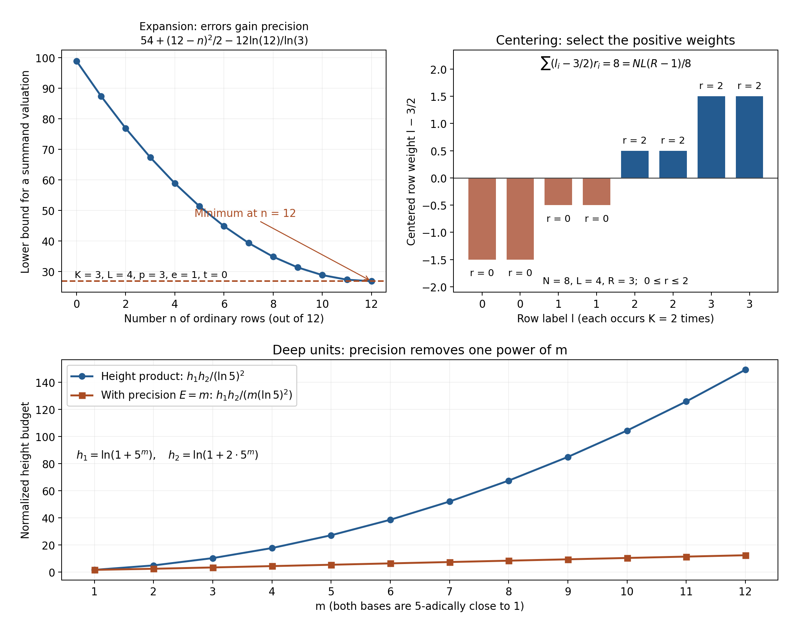
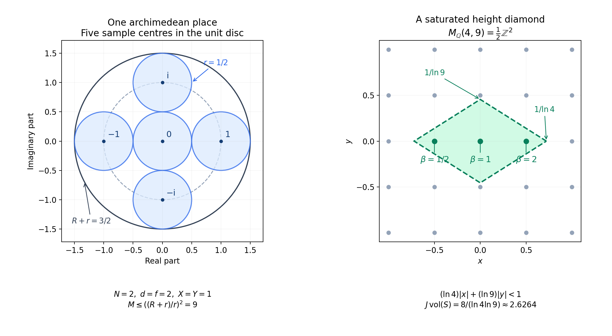
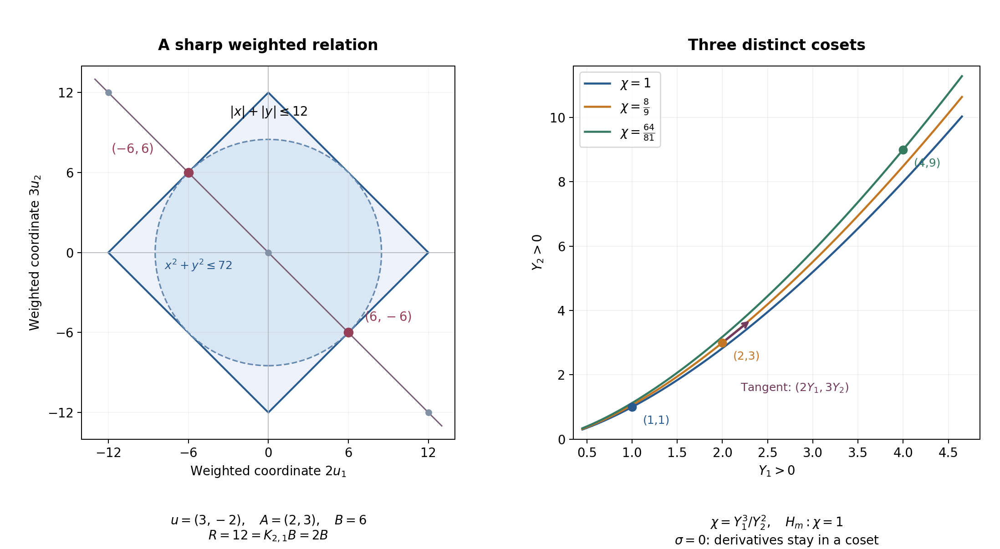
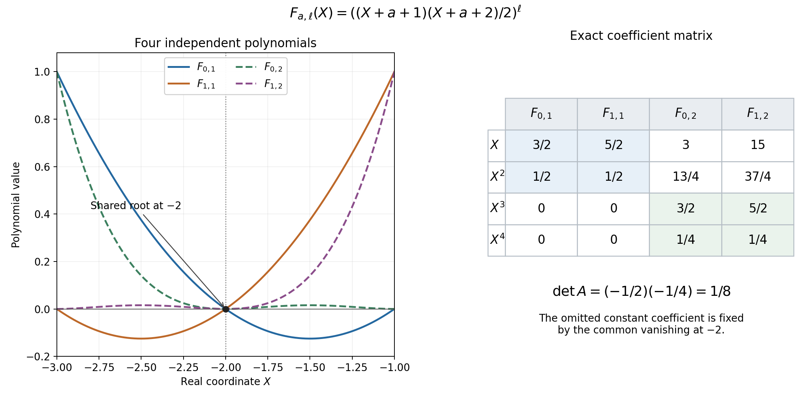
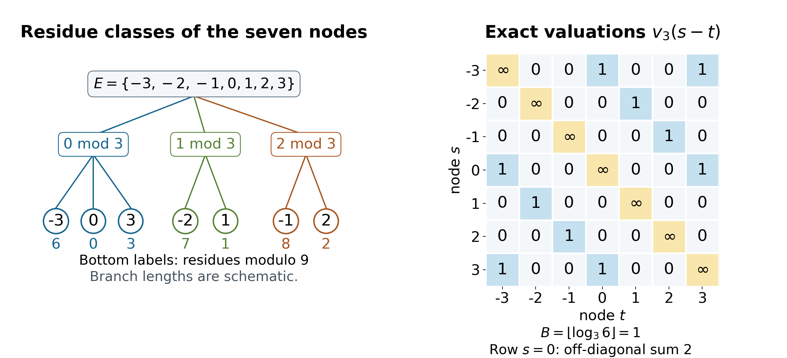

Two p-adic logarithms: determinant bounds
Draft. Public domain (CC0).
A large valuation of \(2^a-3^b\) means that the two powers agree to many p-adic digits. The determinant method measures how far this agreement can continue. It places products of powers in a single residue class, obtains a nonzero algebraic determinant, and compares a height bound with the large valuation forced by near agreement.
We use the exponential, logarithm, power laws and cyclotomic distances proved in p-adic analysis for linear forms in logarithms. The polynomial zero argument is the method proved in Two logarithms I: interpolation determinants. The weighted product formula is Places of number fields in extensions and the product formula, Theorem 5.2. The height convention and its power law are proved in Heights of algebraic numbers. The necessary determinant estimates are written out below.
Throughout, \(v=v_p\) is normalized by \(v(p)=1\), and \(\ln\) is the real natural logarithm. All algebraic numbers have a specified embedding into \(\overline{\mathbb Q}_p\). We distinguish the global degree \(d\), local ramification index \(e\), and local residue degree \(f\).
1. Residues and principal units
Put \(K_0=\mathbb Q(\alpha_1,\alpha_2)\), \(d=[K_0:\mathbb Q]\), and \(F=\mathbb Q_p(\alpha_1,\alpha_2)\). Its residue field has \(p^f\) elements and \([F:\mathbb Q_p]=ef\le d\). Assume \(v(\alpha_i)=0\).
The multiplicative group of the residue field is cyclic. Here is an elementary proof. In a finite abelian group, elements whose orders have prescribed prime power parts can be multiplied to obtain an element of order equal to the least common multiple \(m\) of all element orders. To see this, for each prime choose an element whose order contains the largest occurring power of that prime, and raise it to its complementary part; the resulting elements have pairwise coprime orders. Their product has the product of those orders, since a power that kills the product must kill each component. In a finite subgroup of a field's multiplicative group, every element is a root of \(X^m-1\), so the group has at most \(m\) elements. The element just constructed already has \(m\) distinct powers. It generates the group.
Every nonzero residue has a unique lift to a \((p^f-1)\)-st root of unity in \(F\). For completeness, take any unit \(a\) with that residue and set \(g=p^f-1\). Since \(a^g\in1+\mathfrak m_F\), the powers \((a^g)^{p^n}\) tend to one: the power laws of Lesson 9 first enter \(v(x-1)>1/(p-1)\), and then add one at each further p-th power. Consequently
\[ a^{p^{f(n+1)}}-a^{p^{fn}} =a^{p^{fn}}\bigl((a^g)^{p^{fn}}-1\bigr)\longrightarrow0. \]The differences have valuations tending to infinity, so the sequence is Cauchy. Its limit \(\eta\) has the original residue and satisfies \(\eta^{p^f}=\eta\). Thus \(\eta^g=1\). If two such lifts have the same residue, their quotient \(w\) is a principal unit with \(w^g=1\). The prime-to-p power law in Lesson 9 gives \(v(w^g-1)=v(w-1)\) when \(w\ne1\), which rules this out. This proves uniqueness.
Lift a generator of the residue group to \(\eta\). We may write
\[ \alpha_i=\eta^{m_i}\epsilon_i, \qquad \epsilon_i\in1+\mathfrak m_F, \qquad g=p^f-1. \tag{10.1} \]We use the full residue group here; no condition \(\gcd(m_1,m_2,g)=1\) is required. Choose the least integer \(t\ge0\) such that
\[ p^t>\frac e{p-1},\qquad c_0=\frac{p^t}e. \tag{10.2} \]Lesson 9 proves \(v(\epsilon_i^{p^t}-1)\ge c_0>1/(p-1)\). Also
\[ \frac{p^t}e\le\frac p{p-1}\le2. \tag{10.3} \]If \(t>0\), minimality gives the first inequality. If \(t=0\), it follows from \(e\ge1\).
2. Three integral determinant estimates
Lemma 10.1 (factorials and alternants). For \(n\ge0\),
\[ \frac n{p-1}-\frac{\ln(n+1)}{\ln p} \le v(n!)\le\frac n{p-1}. \tag{10.4} \]For \(z_1,\ldots,z_n\in\mathbb Z_p\),
\[ v\!\left(\prod_{i<j}(z_j-z_i)\right) \ge\sum_{j=0}^{n-1}v(j!) \ge\frac{n(n-1)}{2(p-1)}-\frac{n\ln n}{\ln p}. \tag{10.5} \]Use \(0\ln0=0\). If \(0\le\nu_1<\cdots<\nu_n\), the determinant \(\det(z_i^{\nu_j})\) satisfies the same lower bound.
Proof. The digit formula \(v(n!)=(n-s_p(n))/(p-1)\) was proved in Lesson 9. At a fixed digit sum \(s=a(p-1)+c\), \(0\le c<p-1\), the smallest nonnegative integer is \((c+1)p^a-1\): moving one digit unit from a higher position to an unfilled lower position decreases the number. Concavity of \(\ln(1+x)\) on \([0,p-1]\) gives \(\ln(c+1)\ge c\ln p/(p-1)\). Hence \(s_p(n)\le(p-1)\ln(n+1)/\ln p\), proving (10.4).
The polynomial \(\binom Zj\) is p-adically integral on \(\mathbb Z_p\). It is integral on nonnegative integers, which are dense in \(\mathbb Z_p\): every residue modulo \(p^h\) has such a representative. Continuity gives the assertion on the completion. Replacing the powers in the Vandermonde determinant by falling factorials gives
\[ \det\!\left(\binom{z_i}{j-1}\right)_{i,j=1}^n =\frac{\prod_{i<j}(z_j-z_i)}{\prod_{j=0}^{n-1}j!}. \]The determinant on the left is integral. Sum (10.4), and use \(\ln(n!)\le n\ln n\), to obtain (10.5).
Finally \(\det(Z_i^{\nu_j})\) is alternating, so it vanishes on \(Z_i=Z_j\). Division by the monic polynomial \(Z_j-Z_i\) takes place over \(\mathbb Z\). Each such factor is prime in \(\mathbb Z[Z_1,\ldots,Z_n]\), because its quotient ring is a polynomial ring over \(\mathbb Z\), an integral domain. Distinct pair factors are not associates. They therefore all divide the alternant, with an integer polynomial quotient. Evaluating that quotient in \(\mathbb Z_p\) and applying (10.5) proves the last assertion. \(\square\)
Lemma 10.2 (centering without an occupancy hypothesis). Let \(N=KL\), and let the row labels \(l_i\) consist of \(K\) copies of each integer \(0,\ldots,L-1\). For any ordering of integers \(0\le r_i\le R-1\),
\[ \left|\sum_i l_ir_i-\frac{L-1}{2}\sum_i r_i\right| \le\frac{NL(R-1)}8. \tag{10.6} \]Proof. The weights \(l_i-(L-1)/2\) sum to zero. Their positive sum is \(K\lfloor L^2/4\rfloor/2\): sum the arithmetic progression on either side of the midpoint. A weighted sum with \(r_i\in[0,R-1]\) has maximum at \(R-1\) on the positive weights and zero on the negative weights, and minimum at the reverse choice. Both absolute values are at most \(K(R-1)L^2/8=NL(R-1)/8\). \(\square\)
Lemma 10.3 (a polynomial zero lemma). Let \(a_1,a_2\ne0\) lie in a field of characteristic zero. Let \(E_1,E_2\subset\mathbb Z^2\) be finite and suppose
\[ \#\{a_1^ra_2^s:(r,s)\in E_1\}\ge L, \qquad \#\{b_2r+b_1s:(r,s)\in E_2\}>(K-1)L. \tag{10.7} \]A nonzero polynomial of partial degrees at most \(K-1,L-1\) cannot vanish at all points
\[ \bigl(b_2(r+r')+b_1(s+s'),a_1^{r+r'}a_2^{s+s'}\bigr), \quad (r,s)\in E_1,\ (r',s')\in E_2. \]Proof. Write \(P(X,Y)=\sum_{j=1}^q Q_j(X)Y^{e_j}\), with distinct \(0\le e_j<L\) and nonzero \(Q_j\). Evaluation of these monomials on the at least \(L\) distinct available values has row rank \(q\): otherwise a nonzero polynomial of degree less than \(L\) would have at least \(L\) roots. Choose \(q\) labels \((r_i,s_i)\in E_1\) giving an invertible matrix \((y_i^{e_j})\), where \(x_i=b_2r_i+b_1s_i\) and \(y_i=a_1^{r_i}a_2^{s_i}\).
The polynomial \(D(X)=\det(Q_j(X+x_i)y_i^{e_j})_{i,j}\) has nonzero leading coefficient: it is the product of the leading coefficients of the \(Q_j\)'s times \(\det(y_i^{e_j})\). Its degree is \(\sum_j\deg Q_j\le(K-1)L\). Proposed vanishing gives, at each point \((x,y)\) from \(E_2\), a homogeneous linear system with coefficient determinant \(D(x)\) and nonzero vector \((y^{e_j})\). Thus \(D(x)=0\). The second cardinality condition supplies more roots than its degree. \(\square\)
3. A close root and the analytic determinant
Lemma 10.4 (removing the common p-part). Suppose \(\epsilon_1,\epsilon_2\) are principal units in \(F\), \(b_i>0\), and \(u=v_p(\gcd(b_1,b_2))\). If
\[ v(\epsilon_1^{b_1}-\epsilon_2^{b_2})>u+\frac1{p-1}, \]there is a root of unity \(\zeta\in F\), of order dividing both \(p^u\) and \(p^t\), such that, for \(b_i'=b_i/p^u\),
\[ \delta=\epsilon_1^{b_1'}-\zeta\epsilon_2^{b_2'}, \qquad v(\delta)=v(\epsilon_1^{b_1}-\epsilon_2^{b_2})-u. \tag{10.8} \]Proof. Set \(\sigma=\epsilon_1^{b_1'}/\epsilon_2^{b_2'}\). Then \(v(\sigma^{p^u}-1)\) equals the valuation in the hypothesis. Choose a \(p^u\)-th root \(\zeta\) maximizing \(v(\sigma-\zeta)\). For every other root \(\xi\), maximality and the ultrametric inequality give \(v(\sigma-\xi)\le v(\zeta-\xi)\). The cyclotomic product identity proved in Lesson 9 gives
\[ \sum_{\xi^{p^u}=1,\ \xi\ne\zeta}v(\zeta-\xi)=u. \]Factoring \(\sigma^{p^u}-1\) therefore yields \(v(\sigma-\zeta)>1/(p-1)\). Distinct p-power roots have distance valuation at most \(1/(p-1)\), again by Lesson 9. Thus all the other factors have exactly their root distance valuation, giving \(v(\sigma-\zeta)=v(\sigma^{p^u}-1)-u\).
The chosen root is closer than any of its other \(\mathbb Q_p\)-conjugates, so Krasner's lemma, in Extensions of complete valued fields, Theorem 4.1, gives \(\zeta\in\mathbb Q_p(\sigma)\subset F\). If its order is \(p^w\) with \(w>0\), the cyclotomic ramification theorem proved in Lesson 9 gives \(p^{w-1}(p-1)\le e\). Definition (10.2) implies \(w\le t\). Multiplying \(\sigma-\zeta\) by the unit \(\epsilon_2^{b_2'}\) proves (10.8). \(\square\)
Take a matrix with rows \((k,l)\), \(0\le k<K\), \(0\le l<L\), and distinct selected columns \((r_j,s_j)\), \(0\le r_j<R\), \(0\le s_j<S\), all in one class \(m_1r_j+m_2s_j\equiv c\pmod g\). Its entries are
\[ \binom{b_2r_j+b_1s_j}{k}\alpha_1^{p^t l r_j}\alpha_2^{p^t l s_j}. \tag{10.9} \]Lemma 10.5 (analytic valuation). Let \(\Delta\) be a determinant of order \(N=KL\) extracted in this way. Write \(\Lambda=\alpha_1^{b_1}-\alpha_2^{b_2}\). If
\[ v(\Lambda)\ge c_0\left(N-\frac12\right)+u, \]then
\[ v(\Delta)\ge\frac{p^tNK(L-1)}{2e}-\frac{N\ln N}{\ln p}. \tag{10.10} \]Proof. Substitute (10.1). Since all columns have one residue class, the root-of-unity factor in each row is constant across that row; removing these factors changes no valuation. The positive valuation of \(\Lambda\) also forces \(m_1b_1\equiv m_2b_2\pmod g\), so the principal-unit difference has the same valuation. We may therefore work with \(\epsilon_1,\epsilon_2\).
Lemma 10.4 applies. Interchange the two bases, coefficients and column coordinates if necessary so that \(p\nmid b_2'\). Put
\[ \theta=b_1'/b_2'\in\mathbb Z_p,\qquad z_j=r_j+\theta s_j\in\mathbb Z_p,\qquad \omega=\log(\epsilon_1^{p^t}),\qquad v(\omega)\ge c_0. \]The logarithm here is the p-adic logarithm. The deep-unit power laws of Lesson 9, together with \(\zeta^{p^t}=1\), give
\[ \epsilon_2^{p^t l s_j} =\epsilon_1^{p^t\theta l s_j} \bigl(1-\epsilon_1^{-b_1'}\delta\bigr)^{p^t l s_j/b_2'} =\epsilon_1^{p^t\theta l s_j}(1+\delta q_{ij}), \qquad v(q_{ij})\ge0. \tag{10.11} \]Indeed the final power has p-adic integral exponent, and the logarithm and exponential are isometries on their deep domains. Its difference from one has valuation at least \(v(\delta)\). All the substitutions take place in those domains, since \(v(\delta)\ge c_0(N-1/2)>1/(p-1)\).
If \(\delta=0\), the power factor in (10.11) is exactly one; set every \(q_{ij}=0\). This treats a possible zero difference without dividing by zero.
The factor \(q_{ij}\) in (10.11) depends on \(l_i,s_j\), not on \(k_i\). Within each fixed \(l\), the binomial polynomials \(\binom Xk\) may be replaced by \(X^k/k!\) by a triangular row transformation with diagonal entries one. Factoring \(b_2^{k_i}\) from each row, define
\[ \phi_i(z)=\frac{z^{k_i}}{k_i!}\exp(l_i\omega z), \qquad \Delta'=b_2^{\sum_i k_i} \det\bigl(\phi_i(z_j)(1+\delta q_{ij})\bigr). \tag{10.12} \]Here \(v(\Delta')=v(\Delta)\), and the extracted scalar has nonnegative valuation.
Expand the determinant by choosing its ordinary part in a set \(I\) of \(n\) rows and its error part in the other \(N-n\) rows. Expand that summand by the columns chosen for those \(n\) rows. Every summand then contains a factor \(\delta^{N-n}\), a pure \(n\)-row minor \(A\) of \(\phi_i(z_j)\), and a complementary error minor \(B\). We claim
\[ v(A)\ge c_0\left(\frac{n(n-1)}2-\sum_{i\in I}k_i\right) -\frac{n\ln n}{\ln p}, \qquad v(B)\ge-\frac{\sum_{i\notin I}k_i}{p-1}. \tag{10.13} \]The bound for \(B\) follows directly from \(z_j\in\mathbb Z_p\), unit exponential values, integral \(q_{ij}\), and \(v(k_i!)\le k_i/(p-1)\).
For \(A\), expand
\[ \phi_i(z)=\sum_{\nu\ge k_i}\binom\nu{k_i} l_i^{\nu-k_i}\omega^{\nu-k_i}\frac{z^\nu}{\nu!}. \]Its determinant is a sum over distinct orders \(0\le\nu_1<\cdots<\nu_n\). The node determinant is \(\det(z_j^{\nu_h})\); Lemma 10.1 bounds its valuation below by \(n(n-1)/(2(p-1))-n\ln n/\ln p\). The coefficient determinant is an integer polynomial in \(\omega\), homogeneous of degree \(\sum_h\nu_h-\sum_{i\in I}k_i\). If it is nonzero this degree is nonnegative. The factorial denominators lose at most \(\sum_h\nu_h/(p-1)\). Since \(c_0>1/(p-1)\) and \(\sum_h\nu_h\ge n(n-1)/2\), the resulting lower bound is exactly the bound for \(A\) in (10.13). This argument includes \(\omega=0\); terms of positive degree then vanish.
These series may be regrouped: \(\phi_i\) is analytic on a disc of radius greater than one, because \(v(\omega)>1/(p-1)\). In a finite product of its convergent coefficient series only finitely many terms exceed any fixed positive absolute size. The summation lemma of Lesson 9 justifies the multilinear expansions and the regrouping by distinct orders.
Now \(\sum_i k_i=N(K-1)/2\). As \(c_0>1/(p-1)\), each complete summand has valuation at least
\[ (N-n)v(\delta) +c_0\left(\frac{n(n-1)}2-\frac{N(K-1)}2\right) -\frac{N\ln N}{\ln p}. \]For \(0\le n\le N\),
\[ (N-n)\left(N-\frac12\right)+\frac{n(n-1)}2 =\frac{N(N-1)}2+\frac{(N-n)^2}2 \ge\frac{N(N-1)}2. \tag{10.14} \]Apply the ultrametric inequality to the finite row expansion, then subtract \(N(K-1)/2\). This proves (10.10). \(\square\)

Figure 1. Left: Lemma 10.5 with \(K=3,L=4,N=12,p=3,e=1,t=0,u=0\). Under its precision hypothesis, a summand using \(n\) ordinary rows has valuation at least \(54+(12-n)^2/2-12\ln12/\ln3\); the dots are these lower bounds, not measured determinant valuations. The minimum is attained in the bound at \(n=12\). Right: Lemma 10.2 with \(K=2,L=4,N=8,R=3\). The weights are \(l_i-3/2\); selecting \(r_i=2\) on positive weights and zero on negative weights gives the exact extremum \(8=NL(R-1)/8\). Equations (10.6) and (10.14) prove these two mechanisms. Bottom: the family \(\alpha_1=1+5^m,\alpha_2=1+2\cdot5^m\) from Theorem 10.11, with \(1\le m\le12\). The curves show the calculated height budgets \(h_1h_2/(\ln5)^2\) and \(h_1h_2/(m(\ln5)^2)\), where \(h_i=h(\alpha_i)\). They illustrate the precision divisor in (10.43); the curves are height factors, while the exact difference valuation is \(m\).
4. The arithmetic determinant and a parameter theorem
For the selected columns define
\[ W=(R-1)b_2+(S-1)b_1, \qquad \beta=\frac W2 \left(\prod_{k=1}^{K-1}k!\right)^{-2/(K(K-1))}. \tag{10.15} \]Lemma 10.6 (height bound). If \(\Delta\ne0\), then
\[ v(\Delta)\le\frac{dN}{2ef\ln p} \left\{\ln N+(K-1)\ln\beta +\frac{p^tL}{2}\bigl((R-1)h(\alpha_1)+(S-1)h(\alpha_2)\bigr)\right\}. \tag{10.16} \]Proof. The polynomial
\[ P(X,Y)=\det\!\left(\binom{b_2r_j+b_1s_j}{k_i}X^{l_ir_j}Y^{l_is_j}\right) \in\mathbb Z[X,Y] \]satisfies \(\Delta=P(\alpha_1^{p^t},\alpha_2^{p^t})\). Its coefficients are integers because each binomial is evaluated at a nonnegative integer.
On \(|X|=|Y|=1\), replace the binomial basis in each \(l\)-block by \((Z-W/2)^k/k!\), again without changing the determinant. Each row has Euclidean norm at most \(\sqrt N(W/2)^k/k!\). Hadamard's inequality gives
\[ \|P\|_{\mathbb T^2}\le N^{N/2}\beta^{N(K-1)/2}. \tag{10.17} \]One can prove the inequality used here by successively subtracting orthogonal projections of each row onto the span of earlier rows. These operations preserve the determinant; the resulting perpendicular row lengths multiply to its absolute value, and each is no larger than its original row length. If the rows are dependent the determinant is zero.
Every monomial in the determinant expansion has first exponent \(\sum_i l_ir_{\pi(i)}\). Lemma 10.2 places all such exponents in an interval of length at most \(NL(R-1)/4\), and places all second exponents in an interval of length at most \(NL(S-1)/4\). Divide \(P\) by its smallest actual powers of \(X,Y\), obtaining an integer polynomial \(Q\) of these partial degrees. Multiplication by those unit powers changes neither its torus norm nor the valuation at the selected embedding.
We spell out the torus form of Liouville's inequality. For a complex polynomial of partial degrees \(a,b\), maximum modulus applied inside the unit disc, and to the reciprocal polynomial outside it, gives
\[ |Q(x,y)|\le\|Q\|_{\mathbb T^2}\max(1,|x|)^a\max(1,|y|)^b. \]Apply the one-variable argument successively. At finite places an integer polynomial satisfies the same bound without the torus factor. The weighted product formula, applied to the nonzero value, and the definition \(h(x)=d^{-1}\sum_w n_w\ln^+|x|_w\), therefore give
\[ v(Q(x,y))\le\frac d{ef\ln p} \left(\ln\|Q\|_{\mathbb T^2}+a h(x)+b h(y)\right). \]Here the selected local weight is \(ef\). A nonzero integer polynomial has torus norm at least one: any nonzero coefficient is the corresponding Fourier coefficient on the torus and has absolute value at most that norm. Thus the archimedean factor used in the product formula has nonnegative logarithm. Insert (10.17), the two degree widths, and \(h(\alpha_i^{p^t})=p^t h(\alpha_i)\). This proves (10.16). \(\square\)
Theorem 10.7 (p-adic determinant parameter theorem). Let \(K\ge3,L\ge2\), and let \(R_1,R_2,S_1,S_2\) be positive integers. Put \(R=R_1+R_2-1\), \(S=S_1+S_2-1\), \(N=KL\), and define \(\beta\) by (10.15). Suppose two residue classes \(c_1,c_2\pmod g\) satisfy
\[ \begin{aligned} \#\{\alpha_1^{p^tr}\alpha_2^{p^ts}:&\ 0\le r<R_1,\ 0\le s<S_1, \ m_1r+m_2s\equiv c_1\pmod g\}\ge L,\\ \#\{b_2r+b_1s:&\ 0\le r<R_2,\ 0\le s<S_2, \ m_1r+m_2s\equiv c_2\pmod g\}>(K-1)L. \end{aligned} \tag{10.18} \]If
\[ \begin{aligned} p^tK(L-1)\ln p>{}&(d/f+2e)\ln N+(d/f)(K-1)\ln\beta\\ &+\frac{d p^tL}{2f}\bigl((R-1)h(\alpha_1)+(S-1)h(\alpha_2)\bigr), \end{aligned} \tag{10.19} \]then
\[ v(\alpha_1^{b_1}-\alpha_2^{b_2}) <\frac{p^t}e\left(N-\frac12\right)+u. \tag{10.20} \]Proof. The two rectangles restricted to their indicated classes are sets \(E_1,E_2\). Their sum lies in the larger rectangle and class \(c_1+c_2\). Apply Lemma 10.3 with \(a_i=\alpha_i^{p^t}\). A row dependence in (10.9) would be a nonzero polynomial of the stated partial degrees vanishing on the sum set. Hence the matrix restricted to that class has row rank \(N\), and contains a nonzero minor \(\Delta\).
If (10.20) failed, Lemmas 10.5 and 10.6 would both apply. Multiply their comparison by \(2e\ln p/N\). The result is the opposite weak inequality to (10.19). This contradiction proves the theorem. \(\square\)
5. A bound with the height floor \(1/d\)
Theorem 10.8 (two p-adic logarithms). Suppose \(\alpha_1,\alpha_2\) are multiplicatively independent p-adic units, and \(b_1,b_2\) are nonzero integers. Let \(d=[\mathbb Q(\alpha_1,\alpha_2):\mathbb Q]\), and choose real \(A_i>1\) satisfying
\[ \ln A_i\ge\max\{h(\alpha_i),1/d\}. \]Define
\[ \begin{gathered} B'=\frac{|b_1|}{d\ln A_2}+\frac{|b_2|}{d\ln A_1},\\ H=\max\left\{\ln B'+\ln\ln p,\frac{10\ln p}d\right\}. \end{gathered} \tag{10.21} \]Then
\[ v(\alpha_1^{b_1}-\alpha_2^{b_2}) \le2500\,\frac{p^d-1}{(\ln p)^4}\, d^4\ln A_1\ln A_2\,H^2. \tag{10.22} \]In particular, the same inequality holds with \(132000\) in place of \(2500\).
Proof. Inverting a base when its exponent is negative makes both exponents positive, preserving the difference, heights, degree, and independence. We assume this has been done. Set
\[ G=p^d-1,\quad a_i=\frac{d\ln A_i}{\ln p},\quad z=Ga_1a_2,\quad B=\frac{dH}{\ln p},\quad k=256. \tag{10.23} \]We have \(B\ge10\), \(a_i\ge1/\ln p\), and \(z\ge d^2\ge1\). For the last assertion use \(\mathrm e^x-1\ge x^2\) for \(x\ge0\), with \(x=d\ln p\). Its derivative is \(\mathrm e^x-2x>0\), since \(\mathrm e^x\ge1+x+x^2/2>2x\), and it vanishes at \(x=0\).
Choose
\[ \begin{aligned} L&=\lfloor2B\rfloor+2,& K&=\lfloor k z L\rfloor+1,\\ R_1&=\left\lfloor\sqrt{GL a_2/a_1}\right\rfloor+1,& S_1&=\left\lfloor\sqrt{GL a_1/a_2}\right\rfloor+1,\\ R_2&=\left\lfloor\sqrt{G(K-1)L a_2/a_1}\right\rfloor+1,& S_2&=\left\lfloor\sqrt{G(K-1)L a_1/a_2}\right\rfloor+1. \end{aligned} \tag{10.24} \]Thus \(2B<L\le(11/5)B\), \(K\ge k z L\), and
\[ R_1S_1>GL\ge gL,\qquad R_2S_2>G(K-1)L\ge g(K-1)L. \tag{10.25} \]Multiplicative independence makes the products in the first rectangle distinct. Pigeonhole among the \(g\) classes gives the first condition in (10.18).
We first suppose the map \((r,s)\mapsto b_2r+b_1s\) is injective within every class of the second rectangle. Pigeonhole gives the second condition. We verify the remaining parameter inequality.
Let \(Q_K=(\prod_{j=1}^{K-1}j!)^{-2/(K(K-1))}\). Elementary integration of \(\ln x\) gives \(\ln(j!)\ge j\ln j-j\). Since \(x\ln x\) increases for \(x\ge1\),
\[ \sum_{j=1}^{K-1}j\ln j \ge\int_0^{K-1}x\ln x\,dx =\frac{(K-1)^2}2\ln(K-1)-\frac{(K-1)^2}4. \]For the first interval the integral is negative and its endpoint value is zero; for every later unit interval the increasing-function comparison applies. Consequently
\[ \ln Q_K\le-\ln(K-1)+\frac32 +\frac{\ln(K-1)-1/2}{K} \le-\ln(K-1)+2. \tag{10.26} \]The last step uses \(\ln m\le(m+1)/2\) for \(m\ge2\), obtained by differentiating from \(m=2\). Also \(K-1\ge255zL\). Formula (10.24) gives
\[ \begin{aligned} W&\le\sqrt{zL}\bigl(1+\sqrt{K-1}\bigr) \left(\frac{b_1}{a_2}+\frac{b_2}{a_1}\right),\\ \beta&\le\frac{\mathrm e^2}{2\sqrt{255}} \left(1+\frac1{\sqrt{K-1}}\right) \left(\frac{b_1}{a_2}+\frac{b_2}{a_1}\right) <\frac{b_1}{a_2}+\frac{b_2}{a_1}=B'\ln p. \end{aligned} \tag{10.27} \]Indeed \(\mathrm e<3\), \(\sqrt{255}>15\), and the parenthesis is at most two. The elementary bound \(\mathrm e<3\) follows by bounding the tail of \(\sum1/j!\) by a geometric series. Thus \(\ln\beta\le H\). Using \(d/f\le d\), \(e\le d\), \(p^t\ge1\), and the height budgets, a sufficient condition for (10.19) is
\[ K(L-1)>\frac{3d}{\ln p}\ln N +(K-1)B+L\bigl((R-1)a_1+(S-1)a_2\bigr). \tag{10.28} \]This sufficient comparison is valid even when \(\ln\beta<0\), because \(H>0\) and \(\ln\beta\le H\).
The left side minus \((K-1)B\) is at least \(k z L B\). For the height term,
\[ L\bigl((R-1)a_1+(S-1)a_2\bigr) \le2\sqrt{k}\,zL^2+2\sqrt z\,L^{3/2} <72zLB. \tag{10.29} \]To check the last strict inequality, divide by \(zLB\). The first term is at most \(32\cdot11/5=70.4\); the second is at most \(2\sqrt{(11/5)/10}<1\).
Also \(N\le257zL^2\). Since \(z\ge d^2\), we have \(d/z\le1\) and \(d\ln z/z\le1\): the latter follows from \(d\le\sqrt z\) and \(\ln z/\sqrt z\le2/\mathrm e<1\), found by differentiation. Using \(1/\ln p\le1/\ln2<2\), we obtain
\[ \frac{3d\ln N}{zLB\ln p} \le\frac{6(\ln257+1+2\ln L)}{LB} \le\frac{6(\ln257+1+2\ln20)}{200}<1. \tag{10.30} \]The middle comparison uses \(B\ge10,L\ge20\) and the decreasing function \((\ln257+1+2\ln L)/L\). For the last comparison the elementary bounds \(\ln257<6\), \(\ln20<3\) already suffice. Hence the right side of (10.28), after removing \((K-1)B\), is less than \(73zLB\); its left side is at least \(256zLB\). Theorem 10.7 applies and gives \(v(\Lambda)<2N+u\).
It remains to treat a collision in the second rectangle. Subtract the colliding labels. With \(n=\gcd(b_1,b_2)\), \(r_0=b_1/n\), \(s_0=b_2/n\), the differences are \((\ell r_0,-\ell s_0)\) for a nonzero integer \(\ell\). Put \(\sigma=\alpha_1^{r_0}\alpha_2^{-s_0}\). Its residue has an order \(q\mid g\). The class congruence gives \(q\mid\ell\), so
\[ q r_0\le R_2-1,\qquad q s_0\le S_2-1. \tag{10.31} \]If \(q\nmid n\), then \(v(\Lambda)=0\). Otherwise \(n=q p^u n'\), with \(p\nmid n'\). The prime-to-p power law, followed by the p-power laws of Lesson 9, shows
\[ v(\Lambda)=v(\sigma^n-1) \le u+v(\sigma^{q p^t}-1). \]If \(u\ge t\), the deep-domain formula gives equality with \(u-t\) in place of \(u\). If \(u<t\), raising the principal unit to further p-th powers never decreases its positive valuation, giving the displayed inequality. Independence ensures \(\sigma^{q p^t}\ne1\). Applying the weighted product formula to \(X-1\), as in Lemma 10.6, gives
\[ \begin{aligned} v(\Lambda) &\le u+\frac d{ef\ln p} \left(p^tq(r_0h(\alpha_1)+s_0h(\alpha_2))+\ln2\right)\\ &\le u+2\bigl((R_2-1)a_1+(S_2-1)a_2\bigr)+d\\ &\le u+64zL+z. \end{aligned} \tag{10.32} \]Here (10.3) bounds \(p^t/e\), (10.31) bounds the exponents, and \(d\le z\).
Finally, \(b_1\le a_2\mathrm e^H\). Since \(\ln^+a_2\le a_2\) and \(a_1\ln p\ge1\),
\[ u\le\frac{\ln b_1}{\ln p} \le\frac Bd+\frac{\ln^+a_2}{\ln p} \le B+a_1a_2\le B+z \le\frac{11}{100}zB^2. \tag{10.33} \]In the injective case,
\[ 2N+u\le\left(514\left(\frac{11}{5}\right)^2+\frac{11}{100}\right)zB^2 <2500zB^2. \]The collision bound (10.32) is at most \(14.2zB^2\), since \(L\le(11/5)B\) and \(B\ge10\). Thus both cases give (10.22), because
\[ zB^2=\frac{p^d-1}{(\ln p)^4}\,d^4\ln A_1\ln A_2\,H^2. \]This completes the proof. \(\square\)
The factor \(p^d-1\) in these parameter choices is an upper budget for the number of residue classes. It is not being asserted to equal the local residue-group order. This distinction allows the height floor \(1/d\) without inserting an additional absolute cutoff in \(H\).
6. Coprime powers and a worked example
Corollary 10.9. Let \(a>b\ge2\) be coprime positive integers, and let \(p\nmid ab\) be prime. Then
\[ v_p(a^{p-1}-b^{p-1}) \le250000\,\frac{p-1}{(\ln p)^2}\,\ln(5a)\ln(5b). \tag{10.34} \]Proof. Coprimality and \(a,b>1\) make the bases multiplicatively independent: a prime dividing either base forces its exponent to vanish in a proposed relation. In Theorem 10.8 take \(d=1\), \(b_1=b_2=p-1\), and \(\ln A_1=\ln(5a)\), \(\ln A_2=\ln(5b)\). These exceed the rational heights \(\ln a,\ln b\) and one. Then
\[ B'\ln p\le\frac{2(p-1)\ln p}{\ln5}, \qquad \ln(B'\ln p)\le3\ln p<10\ln p. \]For the second inequality use \(\ln\ln p\le\ln p\) and \(\ln(2/\ln5)<\ln2\le\ln p\). Thus \(H=10\ln p\). Substitute it into (10.22). \(\square\)
For positive integers \(a,b\), the independent bases \(2,3\) are 5-adic units. Taking \(\ln A_1=1\), \(\ln A_2=\ln3\), Theorem 10.8 gives
\[ v_5(2^a-3^b) \le\frac{10000\ln3}{(\ln5)^4} \max\!\left\{\ln\left(\frac a{\ln3}+b\right)+\ln\ln5,10\ln5\right\}^{2}. \tag{10.35} \]If \(M=\max(a,b)\), its maximum is at most \(10\ln5+\ln(3M)\). This is an explicit constant times \((1+\ln M)^2\). For example \(2^3-3=5\), so its valuation is one; \(2^7-3=125\), so its valuation is three. These are exact illustrations of the quantity being bounded, rather than numerical evidence for the theorem.
Corollary 10.10 (all powers). For coprime \(a>b\ge2\), an odd prime \(p\nmid ab\), and \(n\ge1\),
\[ v_p(a^n-b^n) \le250000\ln(5a)\ln(5b)\frac p{(\ln p)^2}+v_p(n). \tag{10.36} \]Proof. Let \(q\mid p-1\) be the residue order of \(a/b\). If \(q\nmid n\), the valuation is zero. Otherwise write \(n=qm\). The base \((a/b)^q\) is a principal unit in \(\mathbb Q_p\), whose positive valuation is at least one and thus strictly exceeds \(1/(p-1)\). The prime-to-p and deep p-power laws proved in Lesson 9 give
\[ v_p(a^n-b^n)=v_p(a^q-b^q)+v_p(m) =v_p(a^{p-1}-b^{p-1})+v_p(n). \]Here \(p\nmid q\) and \(p\nmid(p-1)/q\). Apply Corollary 10.9 and \(p-1\le p\). \(\square\)
7. A deep-unit refinement
The precision of the first base can improve the height factor. We state the coefficient and convergence conditions explicitly.
Theorem 10.11 (an E-parameter estimate). Let \(\alpha_1,\alpha_2\) be multiplicatively independent nonzero rationals with \(v_p(\alpha_i)=0\). Put \(g=p-1\), and suppose
\[ v_p(\alpha_1^g-1)\ge E>\frac1{p-1}. \tag{10.37} \]If \(p=2\), require also \(v_2(\alpha_2-1)\ge2\). Let \(b_1,b_2\) be nonzero integers, \(u=v_p(\gcd(b_1,b_2))\), and require \(p\nmid b_2/p^u\). Choose
\[ \begin{gathered} \ln A_i\ge\max\{h(\alpha_i),E\ln p\},\\ B'=\frac{|b_1|}{\ln A_2}+\frac{|b_2|}{\ln A_1},\qquad H_E=\max\{\ln B'+\ln(E\ln p),10E\ln p\}. \end{gathered} \tag{10.38} \]Then
\[ v_p(\alpha_1^{b_1}-\alpha_2^{b_2}) \le1300\,\frac{p-1}{E^3(\ln p)^4}\, \ln A_1\ln A_2\,H_E^2. \tag{10.39} \]Consequently this inequality also holds with \(88000\) in place of \(1300\).
Proof. Invert bases with negative exponents as before. Inversion preserves the precision conditions, because the denominators introduced are units. Decompose \(\alpha_i=\eta^{m_i}\epsilon_i\) as in (10.1), now in \(\mathbb Q_p\). Since \(p\nmid g\), the prime-to-p power law gives \(v(\epsilon_1-1)=v(\alpha_1^g-1)\ge E\). Both principal units are in the exponential domain. For odd \(p\) their positive integer valuations are at least one, greater than \(1/(p-1)\); for \(p=2\), (10.37) and the second-base condition give valuations at least two.
If the original difference has valuation zero, the conclusion is immediate. Otherwise its residue factors agree, so it has the valuation of \(\epsilon_1^{b_1}-\epsilon_2^{b_2}\). For \(b_i'=b_i/p^u\), the deep p-power law gives
\[ \delta=\epsilon_1^{b_1'}-\epsilon_2^{b_2'}, \qquad v(\delta)=v(\alpha_1^{b_1}-\alpha_2^{b_2})-u. \]The matrix (10.9) is used with exponent multiplier one. In Lemma 10.5 take \(\omega=\log\epsilon_1\), so \(v(\omega)\ge E\). The assumed unit denominator \(b_2'\) gives \(z_j=r_j+(b_1'/b_2')s_j\in\mathbb Z_p\). Formula (10.11) holds with multiplier one and no root of unity in \(\delta\). The coefficient of its error part remains integral whenever \(v(\delta)>1/(p-1)\).
We give the resulting comparison, keeping the scale change visible. If \(v(\delta)\ge E(N-1/2)\), the alternant and factorial estimates in (10.13) give
\[ \begin{aligned} v(A)&\ge E\left(\frac{n(n-1)}2-\sum_{i\in I}k_i\right)-\frac{n\ln n}{\ln p},\\ v(B)&\ge-\frac{\sum_{i\notin I}k_i}{p-1} \ge-E\sum_{i\notin I}k_i. \end{aligned} \]The positive coefficient \(E-1/(p-1)\) is what permits replacement of the Taylor-order sum by \(n(n-1)/2\). Formula (10.14) then gives
\[ v(\Delta)\ge\frac{ENK(L-1)}2-\frac{N\ln N}{\ln p}. \]The polynomial height proof of Lemma 10.6 has \(d=e=f=1\) and exponent multiplier one. Thus a sufficient parameter inequality is
\[ EK(L-1)\ln p> 3\ln N+(K-1)\ln\beta +\frac L2\bigl((R-1)h(\alpha_1)+(S-1)h(\alpha_2)\bigr). \tag{10.40} \]Under the two cardinality conditions (10.18), the zero lemma and these two bounds prove \(v(\Lambda)<E(N-1/2)+u\).
Use (10.24) with
\[ G=p-1,\qquad a_i=\frac{\ln A_i}{E\ln p},\qquad z=Ga_1a_2,\qquad B=\frac{H_E}{E\ln p},\qquad k=256. \tag{10.41} \]Here \(a_i\ge1\), \(z\ge G\ge1\), and \(B\ge10\). The cardinalities, factorial estimate and height comparison (10.25)–(10.29) apply unchanged, with \(B' E\ln p=b_1/a_2+b_2/a_1\). In particular \(\ln\beta\le H_E\), and the height contribution after division by \(E\ln p\) is less than \(72zLB\).
We check the remaining logarithmic contribution. From \(E>1/G\) and \(z\ge G\),
\[ \frac1{Ez\ln p}<\frac1{\ln p}<2, \qquad \frac{\ln z}{Ez\ln p}\le1. \]For the second bound, at \(p=2,3\) use \(1/(E\ln p)<2\) and \(\ln z/z\le1/\mathrm e\). For \(p\ge5\), the function \(\ln z/z\) decreases on \(z\ge G\ge4\), giving a bound \(\ln G/\ln p<1\). With \(N\le257zL^2\), therefore,
\[ \frac{3\ln N}{EzLB\ln p} \le\frac{6(\ln257+1+2\ln L)}{LB}<1. \]The left side of the sufficient parameter inequality, after removing \((K-1)B\), is at least \(256zLB\), while its remaining right side is less than \(73zLB\). This verifies (10.40) in the injective case.
In the collision case, take \(q,r_0,s_0\) as in (10.31). If \(q\nmid n=\gcd(b_1,b_2)\), the valuation is zero. Otherwise \(\sigma^q\), with \(\sigma=\alpha_1^{r_0}\alpha_2^{-s_0}\), is a deep principal unit: its residue root has disappeared, and its two principal factors were already deep. Hence \(v(\Lambda)=u+v(\sigma^q-1)\). The one-place polynomial bound for \(X-1\) gives
\[ \begin{aligned} v(\Lambda) &\le u+\frac{q(r_0h(\alpha_1)+s_0h(\alpha_2))+\ln2}{\ln p}\\ &\le u+E\bigl((R_2-1)a_1+(S_2-1)a_2\bigr)+1\\ &\le u+32EzL+1\le u+Ez(32L+1). \end{aligned} \tag{10.42} \]Here \(Ez>EG>1\). Finally \(b_1\le a_2\mathrm e^{H_E}\), so
\[ u\le EB+\frac{\ln^+a_2}{\ln p} \le EB+2Ez\le\frac{12}{100}EzB^2. \]The middle bound uses \(\ln^+a_2\le a_2\), \(EGa_1>1\), and \(1/\ln p<2\). In the injective case,
\[ EN+u\le \left(257\left(\frac{11}{5}\right)^2+\frac{12}{100}\right)EzB^2 =1244EzB^2<1300EzB^2. \]The collision bound is at most \(7.17EzB^2\). Substituting (10.41) into \(EzB^2\) proves (10.39). \(\square\)
The coefficient condition singles out the first base whose logarithm supplies the precision \(E\). Interchanging bases is permissible only if the precision and second-base convergence hypotheses are checked for the newly ordered pair. At \(p=2\), a unit such as three has \(v_2(3-1)=1\), on the exponential boundary; its positivity alone does not provide the deep-unit substitution used in this proof.
For a concrete family take
\[ \alpha_1=1+5^m,\qquad \alpha_2=1+2\cdot5^m,\qquad E=m,\qquad m\ge1. \]The two integers are coprime, because twice the first minus the second is one. They exceed one, so they are multiplicatively independent. Their fourth powers have distance valuation \(m\) from one, by the prime-to-five power law. Both height budgets may be their actual logarithms. For \(b_1=b_2=1\), \(H_E=10m\ln5\) and the exact difference valuation is \(m\). The bound (10.39) is
\[ v_5(\alpha_1-\alpha_2) \le520000\, \frac{\ln(1+5^m)\ln(1+2\cdot5^m)}{m(\ln5)^2}. \tag{10.43} \]The height factor is linear in \(m\), bounded explicitly by \((m\ln5+\ln2)(m\ln5+\ln3)/(m(\ln5)^2)\). Without the precision divisor, the product of these heights is quadratic in \(m\).
8. Saturated bases and Kummer degree
We now allow an arbitrary number of bases. A root which already belongs to the number field should be incorporated into the bases before taking an auxiliary extension. The following construction does this and proves the resulting extension degree.
Let \(K\) be a number field of degree \(d\), embedded in \(\mathbb C\). Let \(q\) be a prime, and assume that \(K\) contains all the q-th roots of unity. For \(n\ge1\) and multiplicatively independent \(\alpha_1,\ldots,\alpha_n\in K^*\), define
\[ \begin{aligned} M_q(\boldsymbol\alpha)=\{\boldsymbol v\in\mathbb Z[1/q]^n:\ &\text{for some }T=q^t, \ T\boldsymbol v\in\mathbb Z^n,\\ &\alpha_1^{Tv_1}\cdots\alpha_n^{Tv_n}=\beta^T \text{ for some }\beta\in K^*\}. \end{aligned} \tag{10.44} \]No choice of complex logarithms is involved in this definition.
The complete finite-height count in Heights of algebraic numbers, Theorem 2.6, bounds the number of algebraic numbers of degree at most \(d\) and height at most \(H\ge0\) by
\[ \mathcal N(d,H)=d^2\bigl(2^{d+1}\mathrm e^{dH}+1\bigr)^{d+1}. \tag{10.45} \]We use its polynomial coefficient proof and the height arithmetic of Proposition 2.5 in that earlier lesson.
Lemma 10.12 (finite saturation). The set \(M=M_q(\boldsymbol\alpha)\) is an additive subgroup of \(\mathbb Q^n\), contains \(\mathbb Z^n\), and has finite index over it. More precisely,
\[ [M:\mathbb Z^n]\le\mathcal N\left(d,\sum_{j=1}^n h(\alpha_j)\right). \tag{10.46} \]This index is a power of \(q\). The group \(M\) has a basis of \(n\) rational vectors over \(\mathbb Z\).
Proof. Powers \(T\) in (10.44) can be enlarged to a common power of \(q\). Multiplying or dividing the corresponding \(\beta\)'s proves closure under addition and subtraction. Integral vectors belong to \(M\) with \(T=1\).
Every coset modulo \(\mathbb Z^n\) has a unique representative \(\boldsymbol v\) with \(0\le v_j<1\). Choose one associated \(\beta\) from (10.44). The product inequality and power identity in Heights of algebraic numbers, Proposition 2.5, give
\[ T h(\beta)=h\left(\prod_j\alpha_j^{Tv_j}\right) \le T\sum_j v_jh(\alpha_j)\le T\sum_j h(\alpha_j). \]Distinct representatives give distinct chosen \(\beta\)'s. Indeed, if two choices were equal, raise their defining equations to a common power \(T\). Their quotient would give \(\prod_j\alpha_j^{T(v_j-w_j)}=1\). Independence forces every \(v_j=w_j\). The earlier finite-height count (10.45) therefore bounds the number of cosets as asserted.
There are finitely many representatives, and each has a denominator which is a power of \(q\). Choose a common denominator \(q^a\). Then \(\mathbb Z^n\subset M\subset q^{-a}\mathbb Z^n\). The finite group \(M/\mathbb Z^n\) is a subgroup of \((q^{-a}\mathbb Z/\mathbb Z)^n\), so its order is a power of \(q\).
For completeness, a subgroup \(L\subset\mathbb Z^n\) containing \(m\mathbb Z^n\), with \(m>0\), has an integral basis of size \(n\). Prove this by induction. Its first-coordinate image is \(c\mathbb Z\) for some \(c>0\): take the least positive first coordinate and apply integer division. Choose \(\boldsymbol x\in L\) with first coordinate \(c\). The kernel of that projection contains \(m\mathbb Z^{n-1}\), so has an \((n-1)\)-element basis by induction. Any element of \(L\) becomes an element of the kernel after subtracting the appropriate integer multiple of \(\boldsymbol x\). These \(n\) vectors are independent and span \(L\). Apply this to \(L=q^aM\) and divide its basis by \(q^a\). \(\square\)
Lemma 10.13 (the maximal q-primary root). The q-primary roots of unity in \(K\) form a finite cyclic group. If \(\alpha_0\) generates it and has order \(q^u\), then \(u\ge1\), and \(\alpha_0^a\) is not a q-th power in \(K\) when \(q\nmid a\).
Proof. Roots of unity have height zero, by the height power identity. Finiteness follows from (10.45) with \(H=0\). The finite-subgroup argument of Section 1 applies over any field: its root count and the existence of an element of maximal exponent prove cyclicity. The assumption that q-th roots are in \(K\) gives \(u\ge1\). If \(\beta^q=\alpha_0^a\) with \(q\nmid a\), then \(\beta^{q^{u+1}}=1\), while its q-th power has order \(q^u\). Thus \(\beta\) has order \(q^{u+1}\), contradicting maximality of \(u\). \(\square\)
Fix such a generator \(\alpha_0\).
Choose a basis \(\boldsymbol v_1,\ldots,\boldsymbol v_n\) of \(M\). By (10.44), after choosing a common power \(T=q^t\), there are \(\theta_i\in K^*\) with
\[ \theta_i^T=\prod_{j=1}^n\alpha_j^{T v_{ji}}, \qquad v_{ji}=(\boldsymbol v_i)_j. \tag{10.47} \]Theorem 10.14 (the saturated Kummer condition). The classes of \(\alpha_0,\theta_1,\ldots,\theta_n\) in \(K^*/(K^*)^q\) are linearly independent over \(\mathbb F_q\). Consequently
\[ [K(\alpha_0^{1/q},\theta_1^{1/q},\ldots,\theta_n^{1/q}):K] =q^{n+1}. \tag{10.48} \]Proof. Suppose \(\alpha_0^{a_0}\prod_i\theta_i^{a_i}=\beta^q\), with integers \(a_i\) and \(\beta\in K^*\). Enlarge \(T\) in (10.47) until it is divisible by the order of \(\alpha_0\). Raising the relation to \(T\) shows that
\[ \boldsymbol w=\frac1q\sum_i a_i\boldsymbol v_i\in M: \quad \prod_j\alpha_j^{qT w_j}=\beta^{qT}. \]Uniqueness of integral coordinates in the basis of \(M\) forces \(q\mid a_i\) for \(1\le i\le n\). Dividing out the corresponding q-th powers, we find that \(\alpha_0^{a_0}\) is a q-th power in \(K\). If \(q\nmid a_0\), its q-th root would have order \(q^{u+1}\), contradicting the choice of \(\alpha_0\). Thus \(q\mid a_0\) as well. This proves independence of all the classes.
We prove the degree consequence directly. More generally, let \(c_1,\ldots,c_r\in K^*\) have independent classes modulo q-th powers, and choose roots \(\rho_i^q=c_i\). The field \(L=K(\rho_1,\ldots,\rho_r)\) splits the separable polynomials \(X^q-c_i\), since all q-th roots of unity are already in \(K\). Fix a primitive q-th root \(\zeta\). Every \(K\)-automorphism acts by \(\rho_i\mapsto\zeta^{t_i}\rho_i\), giving an injective group homomorphism
\[ \operatorname{Aut}_K(L)\longrightarrow\mathbb F_q^r. \]Its image is a vector subspace. If it were proper, Gaussian elimination would give a nonzero vector \(\boldsymbol a\in\mathbb F_q^r\) annihilating it. Choose integer representatives \(0\le a_i<q\). The element \(\prod_i\rho_i^{a_i}\) would then be fixed by every automorphism and would belong to \(K\). Its q-th power is \(\prod_i c_i^{a_i}\), contradicting the independence of the classes.
Here the fixed-element assertion and the automorphism count need only elementary separability. An embedding of an intermediate field extends across each algebraic generator by choosing a root of the transported minimal polynomial. In characteristic zero these roots are distinct, so the number of embeddings of \(L\) equals the product of the successive degrees, namely \([L:K]\). Since \(L\) is a splitting field, every such embedding has image \(L\). If an element outside \(K\) were fixed, choose a different root of its separable minimal polynomial and extend that embedding to \(L\); the resulting automorphism would move it. Thus the fixed elements are precisely \(K\).
The automorphism image is therefore all of \(\mathbb F_q^r\), and \([L:K]=q^r\). Apply this with \(r=n+1\) and the already proved independent classes. \(\square\)
Lemma 10.15 (the residue index does not depend on the saturated basis). Suppose \(q\ne p\), a prime of \(K\) above \(p\) is fixed, and every \(\alpha_j\) is a unit there. The group \(\langle\alpha_0,\theta_1,\ldots,\theta_n\rangle\subset K^*\) is independent of the basis and of the root choices in (10.47). Its generators are p-adic units. If the residue field has size \(p^f\), the integer
\[ \delta_q(\boldsymbol\alpha)= \frac{p^f-1}{|\langle\overline{\alpha_0},\overline{\theta_1}, \ldots,\overline{\theta_n}\rangle|} \tag{10.49} \]is consequently well defined.
Proof. Replacing a root choice in (10.47) multiplies \(\theta_i\) by a q-primary root of unity in \(K\), hence by a power of \(\alpha_0\). For a change of basis write \(\boldsymbol v_i'=\sum_j c_{ji}\boldsymbol v_j\), with the integer matrix \(C\) invertible over \(\mathbb Z\). Raising to a common power \(T=q^t\) shows that \(\theta_i'/\prod_j\theta_j^{c_{ji}}\) is again a q-primary root of unity. The new group is contained in the old one. Applying the inverse integral matrix gives the reverse inclusion.
Taking the valuation in (10.47) gives \(v(\theta_i)=0\); roots of unity are units too. Reduction is therefore defined. Its image is a subgroup of the cyclic group of order \(p^f-1\) proved in Section 1, so its order divides \(p^f-1\), and the quotient in (10.49) is an integer. Basis independence proves the final assertion. \(\square\)
For example, take \(K=\mathbb Q\), \(q=2\), \(\alpha_1=4\), and \(\alpha_2=9\). Prime valuations show that \(M_2(4,9)=\tfrac12\mathbb Z^2\). A saturated basis gives \(\theta_1=2,\theta_2=3\), and \(\alpha_0=-1\). Theorem 10.14 proves
\[ [\mathbb Q(\sqrt{-1},\sqrt2,\sqrt3):\mathbb Q]=8. \]Starting with \(4,9\) would instead leave both classes trivial modulo squares. Saturation exposes the arithmetic independence needed for the auxiliary extension.
9. Counting heights and bounding saturation
The index in (10.46) is finite, but its bound uses the sum of the heights inside an exponential. A sharper count gives a product of heights and a small power of the field degree. This is the arithmetic input for reducing a form with many logarithms to independent bases.
Write \(\mathcal H(\gamma)=\exp h(\gamma)\) for multiplicative height. Let \(K\) have degree \(d\). The number field containing a scalar \(\theta\) below can be larger than \(K\).
Lemma 10.16 (a count at one archimedean place). Fix an archimedean place of \(K\), represented by \(\sigma:K\to\mathbb C\), and put \(f=1\) for a real place and \(f=2\) for a complex place. Fix \(\phi\ne0\) algebraic and a number field \(L\supset K(\phi)\), of degree \(\ell\). Use the product-formula absolute values of \(L\), and set
\[ \begin{aligned} \Phi_v&=\prod_{w\mid v}|\phi|_w^{1/\ell},& \Phi_{\widehat v}&=\prod_{w\nmid v}|\phi|_w^{1/\ell},\\ A_v(a)&=\prod_{w\mid v}\max\{|\phi|_w,|a|_w\}^{1/\ell},& A_{\widehat v}(a)&=\prod_{w\nmid v}\max\{|\phi|_w,|a|_w\}^{1/\ell}. \end{aligned} \]Thus \(\Phi_v\Phi_{\widehat v}=1\), and \(A_v(a)A_{\widehat v}(a)=\mathcal H(a/\phi)\). If \(X,Y\ge1\), \(N\ge2\), and \(u=N^{1/(N-1)}\), then
\[ \#\{a\in K:A_v(a)\le X\Phi_v, \ A_{\widehat v}(a)\le Y\Phi_{\widehat v}\} \le (N-1)\left(1+(uXY^2)^{d/f}\right)^f. \tag{10.50} \]Proof. Finiteness follows from the earlier finite-height count: the numbers \(a/\phi\) lie in \(L\), have degree at most \(\ell\), and have height at most \(\ln(XY)\). The identity for \(A_vA_{\widehat v}\) follows by factoring \(|\phi|_w\) from each maximum and applying the product formula to \(\phi\).
The first local inequality implies \(|\sigma a|\le R\), where \(R=(X\Phi_v)^{d/f}\). This follows because the sum of archimedean weights above \(v\) is \(f\ell/d\). Indeed, each embedding of \(K\) has \([L:K]\) extensions; conjugate complex embeddings contribute weight two, and real embeddings contribute weight one.
Put \(r=(uY^2\Phi_{\widehat v})^{-d/f}\). Draw around each \(\sigma a\) a ball of radius \(r\) in \(\mathbb R^f\). These balls lie in the ball of radius \(R+r\). We show that no point is in the interiors of \(N\) of them.
Otherwise there are distinct \(a_1,\ldots,a_N\) whose images lie in a ball of radius strictly less than \(r\), with centre \(z\). Put \(Q=N(N-1)/2\), and let \(\Delta=\prod_{i<j}(a_j-a_i)\ne0\). Translating the Vandermonde rows replaces \((\sigma a_i)^k\) by \((\sigma a_i-z)^k\) without changing the determinant. Factoring the radius from its rows and using Hadamard's inequality gives \(|\sigma\Delta|<N^{N/2}r^Q=u^Qr^Q\). Here Hadamard's inequality follows by orthogonalizing the columns: this preserves the determinant and weakly decreases their norms, while the determinant of the orthogonal columns has absolute value the product of those norms.
At a finite place \(w\nmid v\), expand the determinant into its permutation monomials. Every monomial has total degree \(Q\) and degree at most \(N-1\) in each \(a_i\). With \(\lambda=|\phi|_w\), its absolute value is at most
\[ \lambda^{-Q}\prod_i\max\{\lambda,|a_i|_w\}^{N-1}. \]The ultrametric inequality gives the same bound for \(\Delta\). At an archimedean embedding \(\tau\) outside \(v\), apply Hadamard to the powers of \(\tau a_i/\tau\phi\). Each column has norm at most \(\sqrt N\max\{1,|\tau a_i/\tau\phi|\}^{N-1}\), so the same bound has the extra factor \(N^{f_wN/2}\), where \(f_w=1\) or two is its archimedean weight.
Crucially, the sum of these unselected archimedean weights is exactly \(\ell(d-f)/d\). Multiplying their bounds and the finite-place bounds gives
\[ \prod_{w\nmid v}|\Delta|_w \le u^{\ell Q(d-f)/d} Y^{2\ell Q}\Phi_{\widehat v}^{\ell Q}. \]The selected place contributes strictly less than \((ur)^{f\ell Q/d}\). The full product is therefore strictly less than \((r^{f/d}uY^2\Phi_{\widehat v})^{\ell Q}=1\), contrary to the product formula. This proves the asserted multiplicity bound for the balls.
Integrate their indicator functions. Their sum is at most \(N-1\) outside their boundaries, which have volume zero. Scaling a ball's volume by its radius gives \(M r^f\le(N-1)(R+r)^f\) for the number \(M\) of centres. Since \(R/r=(uXY^2)^{d/f}\), this is (10.50). \(\square\)
We need a uniform choice of \(N\). For \(d\ge2\), take
\[ m=\lfloor d\ln d\rfloor,\qquad N=m+1,\qquad u=N^{1/m},\qquad u^d<8. \tag{10.51} \]Here is a proof of the last inequality for every degree. For \(d=2,3\), the choices are \(N=2,4\), giving \(u^d=4\) in both cases. For \(d\ge4\), put \(x=d\ln d>4\). Then \(m\ge3x/4\), \(N\le5x/4\), and
\[ \frac{d\ln N}{m} \le\frac43\left(1+\frac{\ln\ln d}{\ln d} +\frac{\ln(5/4)}{\ln d}\right) <\frac43\left(1+\frac38+\frac16\right)=\frac{37}{18}<\ln8. \]The first fraction is at most \(1/\mathrm e<3/8\), by differentiating \(\ln t/t\). The second is less than \(1/6\), since \((5/4)^6<4\). Finally \(\ln2=2\sum_{j\ge0}(1/3)^{2j+1}/(2j+1)>56/81\), which proves \(\ln8>37/18\). This series follows by integrating the geometric series on \([0,1/3]\). The elementary bounds \(8/3<\mathrm e<3\) follow directly from its exponential series. They give \(1/2<\ln2<1\) and \(1<\ln3<4/3\); for the last upper bound, use \((8/3)^4>3^3\). These also verify the two small choices of \(N\).
Theorem 10.17 (uniform twisted height count). Let \(\theta\ne0\) be algebraic and \(H\ge1\). The following bounds hold:
\[ \begin{aligned} \#\{a\in K:\mathcal H(\theta a)\le H\} &\le68d\ln d\,H^{2d} &&(d\ge2),\\ &\le31d\ln d\,H^{2d} &&(d\ge2,\ \theta\in K),\\ &\le17H^2 &&(d=1). \end{aligned} \tag{10.52} \]Proof. Apply Lemma 10.16 with \(\phi=1/\theta\). Both ratios \(A_v/\Phi_v\) and \(A_{\widehat v}/\Phi_{\widehat v}\) are at least one, and their product is \(\mathcal H(\theta a)\). Divide the first ratio into bands \(2^{(i-1)/d}\le A_v/\Phi_v<2^{i/d}\). There are at most \(I=1+\lfloor d\ln H/\ln2\rfloor\) bands. Within band \(i\), set \(X_i=2^{i/d}\), \(Y_i=2^{-(i-1)/d}H\). Then \(X_iY_i^2=2^{(2-i)/d}H^2\).
Let \(M(H)\) denote the count. Summing (10.50), using \(I\le H^d\), \(\sum_{i\ge1}2^{2-i}=4\), and \(\sum_{i\ge1}2^{(2-i)/2}=2/(\sqrt2-1)\), gives
\[ \begin{aligned} M(H)&\le m(1+4u^d)H^{2d} &&(f=1),\\ M(H)&\le m\left[ \left(1+\frac{4u^{d/2}}{\sqrt2-1}\right)H^d +4u^dH^{2d}\right] &&(f=2). \end{aligned} \tag{10.53} \]To see \(I\le H^d\), put \(t=H^d\); if \(k=\lfloor\log_2t\rfloor\), then \(k+1\le2^k\le t\). With (10.51), the first coefficient is less than 33, and the two coefficients in the second line are less than 31 and 32: use \(\sqrt8<3\) and \(1/(\sqrt2-1)=1+\sqrt2<5/2\). Since \(m\le d\ln d\), both imply the first assertion of (10.52). For \(d=1\), take \(N=2,u=2\) instead. The first line yields \(M(H)\le H+8H^2\le9H^2<17H^2\).
If \(\theta\in K\), multiplication by \(\theta\) is a bijection, so reduce to \(\theta=1\). The set contains \(0,1,-1\). All other elements pair as \(a,a^{-1}\), with equal heights, and at least one member of each pair satisfies \(|\sigma a|\le1\). Consequently a subset of cardinality \((M(H)+3)/2\) satisfies the inequalities of Lemma 10.16 with \(X=1,Y=H,\phi=1\). At a complex place this gives \(M(H)\le2m(1+u^{d/2}H^d)^2-3\le30d\ln d\,H^{2d}\); at a real place it gives \(M(H)\le2m(1+u^dH^{2d})-3\le18d\ln d\,H^{2d}\). These prove the second assertion. \(\square\)
Theorem 10.18 (the full saturation index). For independent \(\alpha_1,\ldots,\alpha_n\in K^*\), define
\[ M_K(\boldsymbol\alpha)= \{\boldsymbol v\in\mathbb Q^n: T\boldsymbol v\in\mathbb Z^n, \ \prod_j\alpha_j^{Tv_j}=\beta^T \text{ for some }T\ge1,\ \beta\in K^*\}. \tag{10.54} \]Let \(w_K\) be the number of roots of unity in \(K\). This is a lattice containing \(\mathbb Z^n\), and
\[ w_K[M_K:\mathbb Z^n] \le C_d\frac{n!\mathrm e^n}{n^n}\prod_jh(\alpha_j), \qquad C_d=\begin{cases}58d^{n+1}\ln d,&d\ge2,\\17,&d=1. \end{cases} \tag{10.55} \]Proof. Common integer powers prove that \(M_K\) is a subgroup. The coset argument of Lemma 10.12 applies with arbitrary positive integers \(T\): distinct representatives in \([0,1)^n\) give distinct elements of \(K\) of height at most \(\sum h(\alpha_j)\). Thus its index \(J\) is finite. A common denominator puts it between \(\mathbb Z^n\) and \(T^{-1}\mathbb Z^n\); the integral basis induction there proves it is a lattice. Its fundamental volume is \(1/J\), since the unit-volume fundamental domain of \(\mathbb Z^n\) contains \(J\) fundamental domains of \(M_K\).
The group of all roots of unity in \(K\) is finite by (10.45) with height zero, and the finite-subgroup argument of Section 1 makes it cyclic. Each \(h_j=h(\alpha_j)\) is positive: otherwise all powers of \(\alpha_j\) have height zero and lie in \(K\), so the same finite-height count would make two powers equal, contradicting independence.
For \(H>1\), the open diamond
\[ S=\{\boldsymbol x:\sum_jh_j|x_j|<\ln H\} \quad\text{has volume}\quad V=\frac{2^n(\ln H)^n}{n!\prod_jh_j}. \tag{10.56} \]In each orthant, scale the coordinates by \(h_j\) and integrate the simplex \(\sum y_j<\ln H\); induction by its last coordinate gives volume \((\ln H)^n/n!\). This proves the volume formula.
Average the count \(\sum_{\boldsymbol v\in M_K}1_S(\boldsymbol t+\boldsymbol v)\) over a fundamental domain. Translating its integrals tiles \(\mathbb R^n\), so the integral equals \(V\) and its average equals \(JV\). Some coset therefore has at least \(JV\) points in \(S\). There are only finitely many in the bounded diamond. Since \(S\) is open, perturb the translating vector to a rational vector while retaining this finite set of points. Denote the resulting rational points by \(P_0,\ldots,P_s\); their differences still lie in \(M_K\), and \(s+1\ge JV\).
Choose determinations \(\theta_i=\prod_j\alpha_j^{(P_i)_j}\). They are algebraic because the coordinates are rational. The definition of \(M_K\) gives \(\theta_i/\theta_0=\mu_i\beta_i\) for \(\beta_i\in K\) and roots of unity \(\mu_i\) in an algebraic closure. The height power and product identities give \(h(\theta_0\beta_i)=h(\theta_i)<\ln H\). Multiplying by a root of unity preserves height: raise to its order and use the power identity.
The \(\beta_i\) are distinct modulo roots of unity in \(K\). If a quotient were a root of unity, then so would \(\theta_i/\theta_j\); raising to a common denominator and then to its order would contradict independence of the \(\alpha_j\). Consequently their \(w_K\) root-of-unity multiples give \(w_K(s+1)\) distinct elements of \(K\) counted by Theorem 10.17 with twist \(\theta_0\). Hence \(w_KJV\le M(H)\).
Take \(H=\exp(n/(2d))\). At a complex place, (10.53) divided by \(\exp(n)\) is less than \(d\ln d(31/\sqrt{\mathrm e}+32)<58d\ln d\), since \(\sqrt{\mathrm e}>3/2\). At a real place the coefficient is less than \(33d\ln d\). Substitute (10.56) to obtain (10.55). For \(d=1\), the bound \(17H^2\) gives exactly its stated constant 17. \(\square\)
In particular, since \(w_K\ge1\) and the index is at least one,
\[ \prod_jh(\alpha_j)\ge \frac{w_K}{C_d}\frac{n^n}{n!\mathrm e^n}. \tag{10.57} \]Corollary 10.19 (the q-primary part). The lattice of Section 8 is exactly \(M_q=M_K\cap\mathbb Z[1/q]^n\). Therefore (10.55) also bounds \(w_K[M_q:\mathbb Z^n]\).
Proof. Only the reverse inclusion needs proof. For a vector in the intersection, write a power realizing (10.54) as \(T=q^a m\) with \(q\nmid m\). Since its coordinates have q-power denominators, \(q^a\boldsymbol v\) is integral. Put \(\gamma=\prod_j\alpha_j^{q^av_j}\). The defining equation says \(\gamma^m=\beta^{q^am}\), so \(\zeta=\gamma/\beta^{q^a}\in K\) has order dividing \(m\). Raising to \(q^a\) is a bijection on this finite cyclic group, by Bezout's identity for \(q^a,m\). Choose \(\eta\in\langle\zeta\rangle\) with \(\eta^{q^a}=\zeta\). Then \(\gamma=(\beta\eta)^{q^a}\), which realizes (10.44). The inclusion of finite quotients gives the index inequality. \(\square\)
Corollary 10.20 (a primitive circuit relation). Suppose \(\alpha_0,\ldots,\alpha_n\in K^*\) are dependent but every \(n\) of them are independent. There are nonzero integers \(b_i\) with \(\prod_i\alpha_i^{b_i}=1\) and
\[ |b_i|\le C_d\frac{n!\mathrm e^n}{n^n} \prod_{j\ne i}h(\alpha_j)\qquad(0\le i\le n), \tag{10.58} \]where \(C_d\) is the degree factor in (10.55).
Proof. The integer vectors whose products are roots of unity have rational rank one. Two nonproportional such vectors could eliminate a coordinate, producing a nonzero torsion relation on only \(n\) bases; raising to the torsion order contradicts their independence. Divide any nonzero relation vector by its coordinate gcd to obtain a primitive vector \(\boldsymbol r\). Its product is still a root of unity, since a power of that product is one. All \(r_i\ne0\), and every integer vector in this rational line is an integer multiple of \(\boldsymbol r\), by Bezout's identity for its coordinate gcd.
The vector \((r_1/r_0,\ldots,r_n/r_0)\) belongs to \(M_K(\alpha_1,\ldots,\alpha_n)\): take \(T=|r_0|w_K\) and \(\beta=\alpha_0^{-1}\) in (10.54). The root of unity in the relation disappears upon raising to \(T/r_0\). Its order modulo \(\mathbb Z^n\) is exactly \(|r_0|\), again by Bezout's identity for the coordinate gcd. Thus \(|r_0|\le[M_K:\mathbb Z^n]\). Set \(b_i=w_Kr_i\); their product is one, and (10.55) proves the bound for \(b_0\). Apply the same argument after omitting each other coordinate. The vector \(\boldsymbol b\) is the same throughout, so all the bounds hold simultaneously. \(\square\)

Figure 10.2. Left: the sample \(0,\pm1,\pm i\) in \(\mathbb Q(i)\) has multiplicative height one and lies in the unit disc. For \(N=2,d=f=2,X=Y=1\), Lemma 10.16 uses radius \(r=1/2\); the five small discs have disjoint interiors and lie in the disc of radius \(R+r=3/2\). The area bound is nine centres. Right: for the rational bases \(4,9\), the full lattice is \(\tfrac12\mathbb Z^2\). The open diamond \((\ln4)|x|+(\ln9)|y|<1\) has volume \(2/(\ln4\ln9)\); its coset average is \(8/(\ln4\ln9)\), between two and three. The zero coset contains the three displayed points, giving \(1/2,1,2\). Their two rational root-of-unity multiples are six distinct numbers of height below \(\mathrm e\). These are samples of the proved packing and averaging steps (10.50), (10.56), not numerical substitutes for the uniform bounds. Source mechanism: Loher and Masser, cited below. Reproducible source: height_counting_geometry.py.
10. One logarithm with its residue order
The one-dimensional case needs the order of the original residue class, rather than the size of a saturated residue group. Keeping that order and the local residue degree in the height inequality gives a sharper form of the one-logarithm bound.
Theorem 10.21 (the actual residue order). Let \(K\) have degree \(d\), and let \(\mathfrak p\) be a prime above \(p\), of ramification index \(e\) and residue degree \(f\). Normalize \(v_p(p)=1\) and \(\operatorname{ord}_{\mathfrak p}=e v_p\). Suppose \(\alpha\in K^*\) is a unit at \(\mathfrak p\), and let \(g=|\langle\bar\alpha\rangle|\) be the order of its nonzero residue class. If \(b\in\mathbb Z\setminus\{0\}\) and \(\alpha^b\ne1\), then
\[ \operatorname{ord}_{\mathfrak p}(\alpha^b-1) \le e v_p(b)+\frac d{f\ln p} \left(\frac{gep}{p-1}h(\alpha)+\ln2\right). \tag{10.59} \]Consequently,
\[ \operatorname{ord}_{\mathfrak p}(\alpha^b-1) \le\frac d{f\ln p} \left(\ln(2|b|)+g\left(1+\frac1{p-1}\right)e h(\alpha)\right). \tag{10.60} \]Both bounds include roots of unity, subject to the nonvanishing condition.
Proof. Replacing \(b\) by \(|b|\) does not change the valuation: for a unit \(x\), \(x^{-1}-1=-x^{-1}(x-1)\). Hence take \(b>0\). The order \(g\) divides \(p^f-1\), so it is prime to \(p\). If \(g\nmid b\), reduction makes the left side zero.
For every nonzero \(\eta\in K\), the normalized height formula gives
\[ \operatorname{ord}_{\mathfrak p}(\eta)\ln p \le\frac d f h(\eta). \]Indeed, when the valuation is positive, the contribution of \(\mathfrak p\) to \(d h(\eta^{-1})\) is \(f\operatorname{ord}_{\mathfrak p}(\eta)\ln p\), and all other contributions are nonnegative. Use \(h(\eta^{-1})=h(\eta)\). When it is nonpositive, the inequality is immediate. These are the height and local-degree identities proved in Heights of algebraic numbers and Places of number fields in extensions and the product formula.
First suppose \(\alpha\) is not a root of unity and \(g\mid b\). Put \(\beta=\alpha^g\). Its positive finite valuation \(v_p(\beta-1)\) is at least \(1/e\). Let \(t\) be the least nonnegative integer with \(p^t>e/(p-1)\). The proved entrance-time and power-step statements in p-adic logarithms: power series, heights and the one-logarithm bound give
\[ c_t=v_p(\alpha^{gp^t}-1)>\frac1{p-1}, \qquad p^t\le\frac{ep}{p-1}. \]The second inequality follows from minimality when \(t>0\). When \(t=0\), its right side is greater than one since \(e\ge1\).
Write \(b=g p^a m\), with \(p\nmid m\). Then \(a=v_p(b)\). Prime-to-\(p\) powers preserve positive valuation. After step \(t\), each \(p\)-power adds one. Earlier positive valuations increase strictly at each step, including a step on the boundary. Thus, whether \(a\ge t\) or \(a<t\),
\[ v_p(\alpha^b-1)\le a+c_t. \]Apply the local height inequality to \(\eta=\alpha^{gp^t}-1\ne0\). The proved height power and sum inequalities give \(h(\eta)\le gp^t h(\alpha)+\ln2\). Multiplying the preceding valuation bound by \(e\) therefore yields
\[ \operatorname{ord}_{\mathfrak p}(\alpha^b-1) \le e a+\frac d{f\ln p} \left(gp^t h(\alpha)+\ln2\right). \]Use \(p^t\le ep/(p-1)\) to obtain (10.59).
Now suppose \(\alpha\) is a root of unity. Its height is zero by the height power identity. If the left side is positive, the nontrivial root \(\alpha^b\) has \(p\)-power order: write its order as \(p^u s\), \(p\nmid s\), and use the prime-to-\(p\) power step to show that a root of order dividing \(s\) congruent to one must be one. The completely proved cyclotomic distance formula in the same lesson, Section 5 gives
\[ \operatorname{ord}_{\mathfrak p}(\alpha^b-1) \le\frac e{p-1}\le\frac{d\ln2}{f\ln p}. \]For the second inequality use \(ef\le d\) and \(\ln p\le(p-1)\ln2\), which follows by induction from \(p\le2^{p-1}\) for integers \(p\ge2\). This proves (10.59) for torsion as well.
Finally \(v_p(b)\ln p\le\ln|b|\) and \(ef\le d\), so \(e v_p(b)\le d\ln|b|/(f\ln p)\). Substitute in (10.59) and use \(p/(p-1)=1+1/(p-1)\) to obtain (10.60). \(\square\)
For example, take \(K=\mathbb Q\), \(\alpha=4\), \(p=5\). The original residue has order \(g=2\), while the saturated basis \(2\), together with \(-1\), generates all four nonzero residues. Thus (10.49) gives saturated index one, whereas the original one-dimensional residue index is two. The parameters serve different bounds.
The exact power laws give valuation zero for odd \(b\), and \(1+v_5(b)\) for even \(b\). For \(b=2\cdot5^k\), (10.60) reads
\[ 1+k\le k+\frac{7\ln4}{2\ln5}. \]At the torsion boundary, \(K=\mathbb Q\), \(p=2\), \(\alpha=-1\), \(b=1\), the height term vanishes and (10.60) is the equality \(1=\ln2/\ln2\).
Corollary 10.22 (a rational one-base reduction). Let \(\alpha_1,\ldots,\alpha_n\in K^*\) be units at \(\mathfrak p\), and let \(\zeta\in K\) be a root of unity of order \(w\). Let \(c_0,c_1,\ldots,c_n\) and \(b_1,\ldots,b_n\) be integers, with \(\boldsymbol b\ne0\), and suppose
\[ b_j=\frac uv c_j\quad(1\le j\le n), \qquad u\ne0,\quad v\ge1,\quad \gcd(u,v)=1. \]Put \(\gamma=\zeta^{c_0}\prod_j\alpha_j^{c_j}\), \(\Xi=\prod_j\alpha_j^{b_j}\), and \(B_*=\min_{b_j\ne0}|b_j|\). If \(\gamma\) is not a root of unity and \(\Xi\ne1\), then, with \(g_\gamma=|\langle\bar\gamma\rangle|\),
\[ \operatorname{ord}_{\mathfrak p}(\Xi-1) \le\frac d{f\ln p} \left(\ln(2wB_*)+ g_\gamma\left(1+\frac1{p-1}\right)e h(\gamma)\right). \tag{10.61} \]Proof. The coefficient identities give \(\Xi^v=\zeta^{-uc_0}\gamma^u\), and hence \(\Xi^{vw}=\gamma^{uw}\ne1\). All these numbers are local units. Factoring \(X^{vw}-1\) by \(X-1\) and evaluating at \(\Xi\) shows that \(\operatorname{ord}_{\mathfrak p}(\Xi-1)\le \operatorname{ord}_{\mathfrak p}(\gamma^{uw}-1)\): the remaining finite sum consists of integral units and is therefore integral. Apply (10.60) to \(\gamma\) and exponent \(uw\). Since \(v b_j=u c_j\) and \(u,v\) are coprime, \(u\) divides every \(b_j\). Thus \(|u|\le B_*\), proving (10.61). \(\square\)
This reduces a form whose coefficient vector is rationally proportional to one integral vector to a single unit, with an exact exponent budget. Applying it to a many-logarithm estimate also requires a proved bound for \(h(\gamma)\) in terms of the original heights; the saturation bounds of Section 9 supply one of the ingredients for that step.
11. Integral derivative bases and a multiplicity reduction
The many-logarithm argument changes the torus coordinates and then differentiates in a rational hyperplane. Two facts matter: the change of derivative basis must preserve p-adic integrality, and the zero estimate must allow different allocations of points at its different dimension steps. We establish both, keeping the coordinate degrees separate.
A minor of minimum valuation
Lemma 10.23 (integral derivative coordinates). Let \(2\le r\le n\). Suppose \(L_0=z_0,L_1,\ldots,L_r\) are independent integral linear forms, with \(L_i=a_{i0}z_0+\sum_{j=1}^n a_{ij}z_j\), and \(\sum_j b_jz_j=B_0L_0+\sum_{i=1}^rB_iL_i\), where \(b_j\in\mathbb Z\), \(B_i\in\mathbb Q\), \(b_n\ne0\), and \(B_r\ne0\). Set
\[ C_{ij}=b_n a_{ij}-b_j a_{in}\quad(1\le i\le r,\ 1\le j<n), \qquad E_i=Y_i\frac{\partial}{\partial Y_i}. \tag{10.62} \]The derivations
\[ \delta_j=\sum_{i=1}^rC_{ij}E_i =\frac1{B_r}\sum_{i<r}C_{ij}(B_rE_i-B_iE_r) \quad(1\le j<n) \tag{10.63} \]span the torus hyperplane \(\sum_iB_i x_i=0\), of dimension \(r-1\). Let \(C'\) be the first \(r-1\) rows of \(C\). Choose \(r-1\) columns \(J\) whose nonzero determinant has minimum \(v_p\) among all such minors. Then the corresponding \(\delta_j\), \(j\in J\), are independent, and every \(\delta_j\) has an expression
\[ \delta_j=\sum_{k\in J}\lambda_{kj}\delta_k, \qquad \lambda_{kj}\in\mathbb Q\cap\mathbb Z_p. \tag{10.64} \]Vanishing of all jets of total order at most \(T\) for these selected derivations and \(\partial_{Y_0}\) is therefore equivalent to vanishing for all the displayed derivations and \(\partial_{Y_0}\). The changes of jets have p-adically integral coefficients.
Proof. Comparing the coefficients of \(z_j\), \(j\ge1\), gives \(b_j=\sum_iB_i a_{ij}\). Hence \(\sum_iB_i C_{ij}=0\), proving the equality in (10.63).
The \(r\) row vectors \(a_i=(a_{i1},\ldots,a_{in})\) are independent. Otherwise a nonzero combination of the \(L_i\) would be a multiple of \(L_0\), contrary to the assumed independence. Suppose a combination \(a=\sum_{i<r}q_i a_i\) annihilates the vectors \(b_ne_j-b_je_n\), \(j<n\). Then \(b_n a_j-b_j a_n=0\) for every \(j<n\), so \(a=(a_n/b_n)b\). Since \(b=\sum_iB_i a_i\) and \(B_r\ne0\), row independence first forces \(a_n/b_n=0\), then all \(q_i=0\). Thus \(C'\) has rank \(r-1\). Its column images in the full matrix are determined by their first \(r-1\) coordinates through \(\sum_iB_i C_{ij}=0\). They span exactly the stated hyperplane.
Solve \(C'_j=C'_J\lambda_j\) by Cramer's rule. Each numerator is zero or, up to sign, another \((r-1)\)-column minor. Minimality of the chosen denominator's valuation therefore gives \(v_p(\lambda_{kj})\ge0\). This proves (10.64).
The Euler derivations commute with one another and with \(\partial_{Y_0}\). Expanding a product of the linear combinations (10.64) expresses every jet of order at most \(T\) as a combination of selected jets of that order. The coefficients are products and sums of the \(\lambda_{kj}\), multiplied by integer multinomial coefficients, so they are in \(\mathbb Z_p\). Conversely the selected derivations are among the original ones. This proves both directions of the vanishing assertion. \(\square\)
These operators also preserve the coordinate degree bounds and local integral coefficients. In fact, \(\delta_j(Y^{\boldsymbol m})=(\sum_iC_{ij}m_i)Y^{\boldsymbol m}\). For a polynomial of degrees at most \(D_i\ge1\), put \(M_j=\max\{1,\sum_i|C_{ij}|D_i\}\). On a monomial, the multiplier of \(\partial_{Y_0}^{t_0}\prod_j\delta_j^{t_j}\) is an integer, and its ordinary absolute value is at most
\[ D_0^{t_0}\prod_jM_j^{t_j}. \tag{10.65} \]Indeed the additive factor is the falling factorial of its exponent, bounded by \(D_0^{t_0}\), and each Euler factor has the displayed bound. Nonzero terms retain their torus exponents and lose exactly \(t_0\) in the additive exponent, so distinct input monomials do not merge. At finite places the integral multipliers introduce no new denominators.
Weighted relations with a sharp degree constant
We shall use the complete upper successive-minima inequality and subgroup-minor calculation in Modern estimates: Matveev and Waldschmidt. The following deduction uses the Euclidean radius \(1/\sqrt r\) in the weighted estimate.
Lemma 10.24 (weighted independent relations). Let \(\mathcal M\subseteq\mathbb Z^r\) have rank \(1\le\nu\le r\), with basis matrix \(U\) of size \(r\) by \(\nu\). Let \(A_j>0\). If \(|\det U_J|\prod_{j\in J}A_j\le B\) for every \(\nu\)-row set \(J\), there are independent \(u_1,\ldots,u_\nu\in\mathcal M\) with
\[ \prod_{i=1}^{\nu}\sum_jA_j|u_{ij}| \le K_{r,\nu}B,\qquad K_{r,\nu}=2^\nu(r/\pi)^{\nu/2} \Gamma(1+\nu/2)\binom r\nu^{1/2}\le r^\nu. \tag{10.66} \]They span \(\mathcal M_{\mathbb Q}\); an integral basis is not asserted.
Proof. Give its real span the weighted Euclidean metric \(\sum_jA_j^2x_j^2\). The Gram determinant identity gives covolume \((\sum_{|J|=\nu}\det(U_J)^2\prod_{j\in J}A_j^2)^{1/2}\le\binom r\nu^{1/2}B\). The unit ball of \(\sum_jA_j|x_j|\) contains the weighted Euclidean ball of radius \(1/\sqrt r\), by Cauchy–Schwarz. Its \(\nu\)-volume is therefore at least \((\pi/r)^{\nu/2}/\Gamma(1+\nu/2)\). The complete volume and upper successive-minima arguments in the earlier lesson give independent lattice vectors with product of these norms at most \(2^\nu\) times the covolume divided by that volume. This proves the first inequality.
For the second use \(\binom r\nu\le r^\nu/\nu!\). It suffices to show \(a_\nu=2^\nu\Gamma(1+\nu/2)/(\pi^{\nu/2}\sqrt{\nu!})\le1\). The Gaussian integral gives \(a_0=a_1=1\), and integration by parts in the defining gamma integral gives \[ \frac{a_{\nu+2}}{a_\nu}=\frac2\pi \sqrt{\frac{\nu+2}{\nu+1}}<1\quad(\nu\ge0), \] since \(\pi>3>2\sqrt2\). For completeness, \(\pi>3\) follows from \(\pi/4=\int_0^1(1+x^2)^{-1}\,dx\): the first eight terms of the integrated geometric series give the strict lower bound \(\sum_{j=0}^7(-1)^j/(2j+1)>3/4\). Its omitted remainder is the integral of \(x^{16}/(1+x^2)>0\). Thus both parity sequences decrease from one. This proves \(K_{r,\nu}\le r^\nu\). \(\square\)
Unequal allocations in the zero estimate
Let \(k\) be algebraically closed of characteristic zero, and put \(G=\mathbb G_a\times\mathbb G_m^r\). Write \(g^s=(s,\vartheta_1^s,\ldots,\vartheta_r^s)\), where the \(\vartheta_i\in k^*\) are multiplicatively independent. For nonzero \(\boldsymbol B\in\mathbb Q^r\), let \(W\) be the span of \(\partial_{Y_0}\) and the Euler directions in the hyperplane \(\boldsymbol B\cdot\boldsymbol x=0\). Its dimension is \(r\).
Theorem 10.25 (multiplicity and dimension reduction). Suppose \(r\ge2\), and let \(S,T\) be nonnegative integers. Choose nonincreasing nonnegative integer allocations
\[ S_0\ge\cdots\ge S_r,\quad T_0\ge\cdots\ge T_r,\qquad \sum_{m=0}^rS_m\le S,\quad\sum_{m=0}^rT_m\le T. \tag{10.67} \]Let the positive coordinate bounds \(D_0,\ldots,D_r\) satisfy \(D_0\ge\max\{D_1,\ldots,D_r,T_r+r\}\), and assume
\[ \begin{aligned} (S_m+1)\binom{T_m+m+1}{m+1} &>(m+1)!D_0 \max_{\substack{J\subseteq\{1,\ldots,r\}\\|J|=m}} \prod_{j\in J}D_j &&(0\le m<r),\\ (S_r+1)\binom{T_r+r}{r} &>(r+1)!D_0\prod_{j=1}^rD_j. \end{aligned} \tag{10.68} \]If a nonzero polynomial of these coordinate bounds vanishes at \(g^s\), \(0\le s\le S\), with all \(W\)-jets of total order at most \(T\), then there are \(1\le\nu<r\) and independent integral vectors \(u_1,\ldots,u_\nu\), whose rational span contains \(\boldsymbol B\). For any \(A_j>0\), put \(R_i=\sum_jA_j|u_{ij}|\) and \(C_{r,\nu}=\nu!K_{r,\nu}\le\nu!r^\nu\). At least one of
\[ (S_\nu+1)\binom{T_\nu+\nu-1}{\nu-1}\prod_iR_i \le C_{r,\nu}\max_{|J|=\nu}\prod_{j\in J}A_jD_j, \tag{10.69} \] \[ (S_\nu+1)\binom{T_\nu+\nu}{\nu}\prod_iR_i \le(\nu+1)C_{r,\nu}D_0 \max_{|J|=\nu}\prod_{j\in J}A_jD_j \tag{10.70} \]holds.
Proof. We use the fully proved stabilizer, jet and coordinate-degree arguments of the multiplicity subsection of the earlier lesson, explaining the allocation step explicitly. Let \(N=r+1\). For \(1\le j\le N+1\), let \(I_j\) be generated by the translates of all \(W\)-derivatives of \(P\) of order at most \(\sum_{m=0}^{j-2}T_m\), at translating points \(g^s\) with \(0\le s\le\sum_{m=0}^{j-2}S_m\); empty sums are zero. Write \(X_j=Z(I_j)\). Translations and invariant derivatives preserve the coordinate bounds. Hence \(G\supsetneq X_1\supseteq\cdots\supseteq X_{N+1}\), and the last set contains the identity by (10.67). Every set is nonempty.
Choose the first \(j\) for which \(X_j,X_{j+1}\) have the same dimension, and a common component \(V\) of that dimension. Such a \(j\le N\) exists, since \(\dim X_1\le N-1\). Before it each dimension falls, so \(\dim V\le N-j\). As in the cited stabilizer proof, define \(E=\{x:x+V\subseteq X_j\}\) and \(H=\{x:x+V=V\}\). The set \(E\) is a finite union of \(H\)-cosets. Its defining ideal, obtained by translating the generators of \(I_j\) by \(V\), has dimension \(\dim H\) and the same coordinate degree bounds. That ideal vanishes through order \(T_{j-1}\) on \(\{g^s:0\le s\le S_{j-1}\}+H\), because the added derivatives and translates are among those defining \(X_{j+1}\).
Replace \(H\) by its identity component \(H_0\), and put \(c=N-\dim H_0\). Since \(\dim H_0\le\dim V\), we have \(c\ge j\). Monotonicity gives at least \(S_{c-1}+1\) point cosets and at least \(T_{c-1}\) jets on them. All these cosets are distinct. Indeed, if \(g^q\in H_0\) for \(q\ne0\), the nonzero additive coordinate forces the additive part of \(H_0\) to be \(\mathbb G_a\). Properness then supplies a nonzero torus character \(u\) with \(\boldsymbol\vartheta^{qu}=1\), contrary to multiplicative independence.
Put \(\sigma=\dim(W/(W\cap T(H_0)))\). The complete positive-filtration upper and lower estimates (8.72)–(8.76) give, for every codimension-\(c\) coordinate set \(J\),
\[ (S_{c-1}+1)\binom{T_{c-1}+\sigma}{\sigma}\delta(H_0;J) \le c!\prod_{j\in J}D_j. \tag{10.71} \]Here \(\delta(H_0;J)\) is the nonnegative integral coefficient of the complementary monomial in the subgroup Hilbert polynomial. To extract a coefficient from the lower polynomial inequality, send exactly the coordinates in that complementary monomial to a common infinity, keeping the others one. The polynomials are squarefree of the same degree, so division by that power leaves exactly the desired coefficient. This is the coefficient argument already proved in the earlier lesson.
Since \(W\) is a hyperplane, \(\sigma=c-1\) when \(T(H_0)\subseteq W\), and \(\sigma=c\) otherwise. In the second case \(c\le r\), and some \(\delta\) is at least one. The maximum product of \(c\) coordinate bounds is \(D_0\max_{|J|=c-1}\prod_{j\in J}D_j\), because \(D_0\) is largest. Inequality (10.71) contradicts (10.68) with \(m=c-1\). Hence \(T(H_0)\subseteq W\).
Write \(H_0=H_a\times H_m\), and let \(\mathcal M\) be the primitive character lattice of \(H_m\), of rank \(\nu\). The subgroup and tangent classification in the earlier lesson shows that \(\boldsymbol B\in\mathcal M_{\mathbb Q}\). Thus \(\nu\ge1\). If \(\nu=r\) and \(H_a=\{0\}\), then \(c=r+1,\sigma=r\), and (10.71) contradicts the last line of (10.68). If \(\nu=r\) and \(H_a=\mathbb G_a\), then \(c=r,\sigma=r-1\). We may decrease the available budgets to \(S_r,T_r\); its unique torus coefficient is one. Thus \((S_r+1)\binom{T_r+r-1}{r-1}\le r!\prod_{j=1}^rD_j\). The last line of (10.68), and \(\binom{T_r+r}{r}/\binom{T_r+r-1}{r-1}=(T_r+r)/r\), contradict this since \(D_0\ge T_r+r\). Therefore \(1\le\nu<r\).
Let \(U\) be a basis matrix of \(\mathcal M\). If \(H_a=\mathbb G_a\), the subgroup coefficients are \(|\det U_J|\), \(c=\nu,\sigma=\nu-1\). Decrease its budgets to \(S_\nu,T_\nu\). Multiply (10.71) by \(\prod_{j\in J}A_j\), and apply Lemma 10.24 to the resulting bounds on every weighted minor. The independent vectors supplied by that lemma span \(\mathcal M_{\mathbb Q}\), so their span contains \(\boldsymbol B\). Its factor \(K_{r,\nu}\) times \(\nu!\) gives (10.69). If \(H_a=\{0\}\), then \(c=\nu+1,\sigma=\nu\); its coefficients on \(\{0\}\cup J\) are \(|\det U_J|\). The same argument uses \((\nu+1)!D_0\) in (10.71), proving (10.70). This accounts for both additive subgroups and completes the proof. \(\square\)
For the allocations \(S_0=\lfloor S/3\rfloor\), \(S_i=\lfloor2S/(3r)\rfloor\) for \(i\ge1\), and \(T_i=\lfloor T/(r+1)\rfloor\), (10.67) holds: \(r\ge2\) makes the point allocations nonincreasing, and their sums are at most \(S,T\). Since the \(T_i\) are equal and \(D_0\ge T_r+r\), (10.69) also implies (10.70). Multiply (10.69) by \((T_\nu+\nu)/\nu\le D_0\); its enlarged right side is at most the right side of (10.70). Thus the second bound alone suffices for this choice of allocations.
Corollary 10.26 (new algebraic bases). If the \(\vartheta_j\) are independent algebraic units in a number field and \(u_i\) are the vectors in Theorem 10.25, put \(\gamma_i=\prod_j\vartheta_j^{u_{ij}}\). They are independent units and
\[ h(\gamma_i)\le\sum_j|u_{ij}|h(\vartheta_j)\le R_i \quad\text{if }A_j\ge h(\vartheta_j). \tag{10.72} \]If \(\boldsymbol b\in\mathbb Z^r\) is in their rational span, there are integers \(m\ge1,c_i\) with \(m\boldsymbol b=\sum_i c_i u_i\), and \((\prod_j\vartheta_j^{b_j})^m=\prod_i\gamma_i^{c_i}\).
Proof. Integer products preserve local units, and the proved height power and product inequalities give (10.72). A multiplicative relation among the \(\gamma_i\) gives a zero integral combination of the \(u_i\), by independence of the \(\vartheta_j\); linear independence of the vectors makes every coefficient zero. Clearing the denominators of a rational span expression proves the last identity. \(\square\)
Example of a sharp weighted factor. For \(r=2,\nu=1\), take \(\mathcal M=\mathbb Z(3,-2)\), weights \(A_1=2,A_2=3\), and minor bound \(B=6\). Its primitive vector has weighted norm 12, exactly \(K_{2,1}B=2B\). In the torus put \(H_m=\{Y_1^3=Y_2^2\}\), \(H=\mathbb G_a\times H_m\), and \(g=(1,2,3)\). For \(s=0,1,2\), its three distinct \(H\)-cosets have characters \(Y_1^3/Y_2^2=(8/9)^s\). The polynomial \[ P(Y_1,Y_2)=\prod_{s=0}^2(9^sY_1^3-8^sY_2^2) \] vanishes on all three. The directions \(\partial_{Y_0}\) and \(2E_1+3E_2\) are tangent to these cosets, so every such derivative vanishes there. Its coordinate bounds are \(D_1=9,D_2=6\), and the corresponding weighted relation inequality is the equality \(3\cdot12=2\max(2\cdot9,3\cdot6)=36\). There is no transverse multiplicity factor in this case: \(\sigma=\nu-1=0\).

Figure 10.3. Left: in weighted coordinates \((2u_1,3u_2)\), the relation \((3,-2)\) becomes \((6,-6)\). Its diamond norm is 12; the Euclidean circle of radius \(12/\sqrt2\) lies in the diamond and meets that relation line at the two marked primitive vectors. This is the equality case of (10.66) for \(r=2,\nu=1\). Right: a positive real section of the torus projections of the three cosets above. Their quotient character values \(1,8/9,64/81\) are distinct, and the points \((1,1),(2,3),(4,9)\) lie on their respective curves. The additive coordinates \(0,1,2\) are omitted from this projection. The arrow is tangent to a coset, in the direction \(2E_1+3E_2\); it illustrates \(\sigma=0\), not a transverse derivative. The complete subgroup, degree and lattice arguments are (10.66), (10.69)–(10.71) and the example. Mathematical background: the earlier complete multiplicity lesson and Yu's free 2013 article, cited below. Figure program.
12. Closing the one-base branch
The many-logarithm construction may reduce to one new base before the auxiliary polynomial is needed. A one-logarithm inequality alone does not finish that step: its constant term must also be compared with the product of the original heights. We give that comparison with the full residue-order and root-of-unity factors.
Let \(n\ge2\), let \(K\) have degree \(d\), and let \(\mathfrak p\) lie above \(p\), with ramification index \(e_{\mathfrak p}\) and residue degree \(f\). Put \(t=f\ln p\) and \(\ln^*d=\max\{1,\ln d\}\). Take multiplicatively independent \(\mathfrak p\)-adic units \(\alpha_1,\ldots,\alpha_n\), integers \(b_j\) not all zero, and write
\[ \Xi=\prod_j\alpha_j^{b_j},\qquad P_h=\prod_jh(\alpha_j),\qquad B_* =\min_{b_j\ne0}|b_j|. \tag{10.73} \]Take \(q=2\) for \(p>2\), and \(q=3\) for \(p=2\). In the second case assume \(\zeta_3\in K\). Let \(w_q=q^u\) be the order of the q-primary roots of unity in \(K\), and choose their generator \(\alpha_0\). Use the intrinsic saturated residue index \(\delta(\boldsymbol\alpha)\) from Lemma 10.15, and define
\[ \begin{aligned} Q_n&=p^f/\delta(\boldsymbol\alpha),& M_n&=\max\{Q_n/t^{n+1},\mathrm e^n/n^n\},\\ L&=\max\{\ln(\mathrm e^4(n+1)d),e_{\mathfrak p},t\},& \varepsilon_n&=10^{-26}/(2n),\\ a&=\begin{cases} 7(p-1)/(p-2),&p\ge5,\ e_{\mathfrak p}=1,\\ 14,&p>2\text{ in the other cases},\\ 26,&p=2, \end{cases}& R_n&=\frac{\mathrm e a}{q}(1+\varepsilon_n)(n+1)d. \end{aligned} \tag{10.74} \]Here \(\mathrm e=\exp(1)\) is distinct from the ramification index. For any \(c\ge206\), put
\[ \mathcal C_n= c a^n\frac{n^n(n+1)^{n+1}d^{n+2}\ln^*d} {n!w_qt}\,M_nL. \tag{10.75} \]Theorem 10.27 (the one-base numerical closure). Suppose there are independent integral forms \(L_0=z_0,L_1=a_0z_0+\sum_ja_jz_j\), and rationals \(B_0,B_1\), with \(B_1\ne0\), such that \(\sum_jb_jz_j=B_0L_0+B_1L_1\). Set \(\gamma=\alpha_0^{a_0}\prod_j\alpha_j^{a_j}\), and let \(g_\gamma\) be its actual residue order at \(\mathfrak p\). Define
\[ \delta_\gamma=\frac{p^f-1}{g_\gamma},\qquad M_\gamma=\max\{p^f/(\delta_\gamma t^2),\mathrm e\}. \tag{10.76} \]Suppose a positive \(\sigma\) satisfies
\[ h(\gamma)\le\sigma\le R_n^{n-1}\frac{M_n}{M_\gamma}P_h. \tag{10.77} \]If \(H\ge\max\{\ln B_*,(n+1)t,\ln(4d)\}\), then
\[ \operatorname{ord}_{\mathfrak p}(\Xi-1) \le\frac1{500}\mathcal C_nP_hH <\mathcal C_nP_hH. \tag{10.78} \]Proof. Write \(B_1=v_1/v_2\) in lowest terms, with \(v_2>0\). Coefficient comparison gives \(v_2b_j=v_1a_j\); hence \(v_1\mid b_j\) and \(|v_1|\le B_*\). Also \(v_2B_0=-v_1a_0\) is integral. Raising the resulting multiplicative identity to \(w_q\) removes \(\alpha_0\): \(\Xi^{v_2w_q}=\gamma^{v_1w_q}\).
The vector \((a_1,\ldots,a_n)\) is nonzero, by independence of the two forms. Thus \(\gamma\) is not a root of unity: a torsion relation would, after a further power killing \(\alpha_0\), contradict independence of the \(\alpha_j\). The same argument proves that \(\Xi\) is not torsion. All powers just used are therefore different from one. The finite geometric sum and Theorem 10.21 give
\[ \operatorname{ord}_{\mathfrak p}(\Xi-1) \le\frac d t\left( \ln(2w_q B_*)+ g_\gamma\frac p{p-1}e_{\mathfrak p}h(\gamma)\right). \tag{10.79} \]Negative \(v_1\) is covered by that theorem. The geometric sum has integral local-unit terms, so its valuation is nonnegative.
We need two elementary estimates. First,
\[ w_q\le\frac q{q-1}d\le2d. \tag{10.80} \]Indeed Proposition 9.7, applied at the prime \(q\), proves that \(\Phi_{q^u}\) is irreducible over \(\mathbb Q_q\), of degree \(q^{u-1}(q-1)\). It is consequently irreducible over \(\mathbb Q\) as well. Since its root \(\alpha_0\) belongs to \(K\), that degree is at most \(d\), proving (10.80). Thus \(\ln(2w_qB_*)\le2H\).
Second, if \(w_K\) is the total number of roots of unity in \(K\), Theorem 10.18 and the index lower bound one give the uniform weakened form
\[ P_h\ge \frac{w_K n^n} {58 n!\mathrm e^n d^{n+1}\ln^*d} \ge\frac{w_q n^n} {58 n!\mathrm e^n d^{n+1}\ln^*d}. \tag{10.81} \]For \(d=1\), the proved constant 17 is smaller than 58, so the same form holds. There is no lower bound for a single new height hidden in this step.
Combining (10.75), (10.81) and \(M_n\ge\mathrm e^n/n^n\) gives
\[ \mathcal C_nP_h\ge \frac c{58}a^n \frac{n^n(n+1)^{n+1}}{(n!)^2}\frac d tL \ge\frac c{58}a^n(n+1)\frac d tL >2000\frac d t. \tag{10.82} \]Here \(n!\le n^n\), \((n+1)^{n+1}/n^n\ge n+1\), \(a\ge7\), and \(L\ge4+\ln3>5\). The last numerical comparison is \(206\cdot49\cdot3\cdot5>2000\cdot58\). The logarithmic term in (10.79) is therefore at most \(\mathcal C_nP_hH/1000\).
For the height term use \(g_\gamma/M_\gamma<t^2\), directly from (10.76), and (10.77). Its ratio to \(\mathcal C_nP_hH\) is at most
\[ \frac{n!}{n^n}\left(\frac{\mathrm e}{q}\right)^{n-1} (1+\varepsilon_n)^{n-1} \frac{w_q e_{\mathfrak p}t^2} {c a(n+1)^2d^2\ln^*d\,LH}\frac p{p-1}. \tag{10.83} \]This is an exact cancellation of the \(M_n\), degree and exponential factors. The local degree inequality gives \(e_{\mathfrak p}\le d\); also \(L\ge t\), \(H\ge(n+1)t\), \(p/(p-1)\le2\), and (10.80) gives \(w_q/d\le2\).
For completeness, monotonicity of \(\ln x\) gives \(\ln(n!)\le\int_1^n\ln x\,dx+\ln n =n\ln n-n+1+\ln n\). Consequently \(n!\mathrm e^{n-1}/n^n\le n\). Furthermore \((1+\varepsilon_n)^{n-1}<2\): use \(\ln(1+x)\le x\), which follows by integrating \((1+x)^{-1}\le1\), and \(\varepsilon_n(n-1)<1/2\). The exponential series gives \(\mathrm e<3\), since \(k!\ge2^{k-1}\) for \(k\ge2\), with strict inequality for \(k\ge3\); hence \(\exp(1/2)<2\). This also proves \(\ln3>1\) used above.
Thus (10.83) is at most \(8n/(q^{n-1}c a(n+1)^3)\le4n/(c a(n+1)^3)\), because \(q\ge2,n\ge2\). Since \((n+1)^2\ge4n\) and \(n+1\ge3\), this is at most \(1/(3ca)\le1/(3\cdot206\cdot7)<1/1000\). The height term is also at most \(\mathcal C_nP_hH/1000\). Adding the two terms proves (10.78). \(\square\)
We check the correspondence with the free 2013 preparation. Let \(\kappa\) be the unique nonnegative integer with \(p^{\kappa-1}(p-1)\le2e_{\mathfrak p}<p^\kappa(p-1)\). Set \(c_2=7/4\) for \(p>2\), and \(c_2=13/9\) for \(p=2\). Put \(\vartheta=(p-2)/(p-1)\) when \(p\ge5,e_{\mathfrak p}=1\), and \(\vartheta=p^\kappa/(2e_{\mathfrak p})\) otherwise, and let \(\theta=\vartheta/(1+\varepsilon_n)\). Direct substitution gives
\[ \mathrm e c_2q\frac{p^\kappa}{e_{\mathfrak p}\theta}(n+1)d=R_n. \tag{10.84} \]In the first case \(\kappa=0\); in the other cases the factors are respectively \(7\) and \(26/3\) before multiplication by \(\mathrm e(1+\varepsilon_n)(n+1)d\). Thus (10.77) is precisely the one-base height-product hypothesis of that preparation. Formula (10.75) is its first numerical coefficient, with any of its listed choices of \(c\), all at least 206. Its parameter \(h^{(1)}\) is at least \(\ln B_*\) and \((n+1)t\); its term \((n+1)(a_0^{(1)}n+a_1^{(1)}+\ln(a_0^{(1)}n+a_2^{(1)})+\ln d)\) is larger than \(\ln(4d)\), since the listed constants satisfy \(a_0^{(1)}>3,a_1^{(1)}>2,a_2^{(1)}>2\). Theorem 10.27 therefore proves the full numerical conclusion in this branch. The proof retains the original saturated index for the \(n\) bases, and the actual unsaturated residue order for the one new base.
13. Binomial preparation of the auxiliary polynomial
The auxiliary polynomial uses shifted powers of binomial polynomials and binomial polynomials in the Euler eigenvalues. We prove their independence, their exact denominator control and their equivalence to ordinary jets. These are algebraic statements; no logarithm estimate is assumed in their proofs.
Taylor coefficients at integral and fractional nodes
For integers \(k\ge1,\ell\ge1,m\ge0\), define
\[ \begin{aligned} \Delta(z;k)&=\frac{(z+1)\cdots(z+k)}{k!},\quad \Delta(z;0)=1,\\ v(k)&=\operatorname{lcm}(1,\ldots,k),\\ \Theta(z;k,\ell,m)&=\frac1{m!}\frac{d^m}{dz^m}\Delta(z;k)^\ell. \end{aligned} \tag{10.85} \]Lemma 10.28 (prepared Taylor integrality). For every integer \(s\),
\[ v(k)^m\Theta(s;k,\ell,m)\in\mathbb Z. \tag{10.86} \]If \(q\) is prime, \(I\in\mathbb Z_{\ge0}\), and \(A,s\in\mathbb Z\), then
\[ q^{\chi_I\ell(kI+v_q(k!))}v(k)^m \Theta(s/q^I+A;k,\ell,m)\in\mathbb Z, \qquad \chi_0=0,\quad\chi_I=1\ (I>0). \tag{10.87} \]In particular \(v(k)^m\Theta(s/q^I+A;k,\ell,m)\) belongs to \(\mathbb Z[1/q]\), before multiplication by the displayed q-power.
Proof. Generalized binomial coefficients \(\binom Nj\) are integral for every integer \(N\): for \(N<0\), their product formula is \((-1)^j\binom{-N+j-1}j\). Vandermonde's polynomial identity gives \(\Delta(s+Z;k)=\sum_{j=0}^k\binom{s+k}{k-j}\binom Zj\). One proof first counts subsets for nonnegative integer arguments and then uses polynomial equality to extend to all arguments. For \(j\ge1\), \[ \binom Zj=\frac{(-1)^{j-1}Z}{j} \prod_{a=1}^{j-1}(1-Z/a). \] Each coefficient of \(Z^m\) has denominators consisting of \(j\) and \(m-1\) numbers among \(1,\ldots,j-1\). Every factor divides \(v(k)\). Hence multiplication by \(v(k)^m\) makes that coefficient integral. The constant coefficient is integral too. In the \(\ell\)-th power, a coefficient of order \(m\) is a sum of products whose orders sum to \(m\); the same scaling therefore clears all of them. This proves (10.86), including vanishing coefficients beyond the degree.
Fix \(F(Z)=v(k)^m\Theta(Z;k,\ell,m)\). It is a rational polynomial, integral at every integer. At \(x=s/q^I+A\), it has no denominator at a prime \(r\ne q\). To see this without a limiting argument, choose \(B\) bounding the r-adic denominators of its finitely many coefficients, and an integer \(N\equiv x\pmod{r^{B+1}}\); the inverse of \(q^I\) modulo that power supplies \(N\). Both \(x,N\) are r-integral. Factoring \(x^j-N^j\) shows that \(F(x)-F(N)\) is r-integral, so \(F(x)\) is r-integral.
The coefficients of \(\Delta(Z;k)^\ell\) have denominator dividing \((k!)^\ell\). Dividing an ordinary derivative of order \(m\) by \(m!\) multiplies each monomial coefficient by an integer binomial coefficient and decreases its degree by \(m\). Thus its value at \(x\) has q-adic denominator at most \(q^{\ell v_q(k!)+Ik\ell}\); the integer factor \(v(k)^m\) cannot worsen this bound. Together with the preceding assertion at every other prime this proves (10.87) for \(I>0\). For \(I=0\), (10.86) already gives an integer and no q-factor is needed. \(\square\)
Independence of the shifted powers
Lemma 10.29 (a binomial polynomial basis). For \(k,L\ge1\), the \(kL\) polynomials
\[ F_{a,\ell}(X)=\Delta(X+a;k)^\ell, \qquad 0\le a<k,\quad1\le\ell\le L, \tag{10.88} \]are a basis of the polynomials of degree at most \(kL\) vanishing at \(X=-k\). For fixed \(\ell\), their top \(k\) coefficient matrix satisfies
\[ \det\left([X^{k\ell-j}]F_{a,\ell}\right)_{0\le j,a<k} =\frac{\prod_{j=0}^{k-1}\binom{k\ell}{j}} {(k!)^{k\ell}}\prod_{0\le a<b<k}(b-a)\ne0. \tag{10.89} \]Proof. The coefficient in row \(j\), regarded as a polynomial in \(a\), has degree \(j\) and leading coefficient \(\binom{k\ell}j/(k!)^\ell\). Indeed expand the degree-\(k\ell\) polynomial \(\Delta(X;k)^\ell\) after substituting \(X+a\); its highest term gives that leading coefficient, and lower terms give smaller powers of \(a\). Changing these row polynomials to monomials is triangular. The monomial evaluation determinant at \(0,\ldots,k-1\) is the Vandermonde product in (10.89). It follows either by subtracting columns and induction, or by observing its zeros at equal columns and its leading coefficient one. This proves the formula.
In a proposed relation, take the largest \(\ell\) occurring. Lower levels have degree at most \(k(\ell-1)\). The top \(k\) coefficients and (10.89) force every coefficient at this largest level to vanish. Descending proves independence. Every polynomial in (10.88) vanishes at \(-k\), because the factor with index \(k-a\) is zero there. The space with this one vanishing condition has dimension \(kL\): evaluation at \(-k\) is a nonzero linear functional on the \(kL+1\)-dimensional polynomial space. Thus the independent family is a basis. An invertible affine substitution preserves its independence. \(\square\)
For \(k=L=2\), Figure 10.4 shows the four basis polynomials and their exact coefficient matrix. A shared root does not give a relation among the polynomials.

Figure 10.4. Left: the restrictions to the real interval \([-3,-1]\) of \(F_{0,1},F_{1,1},F_{0,2},F_{1,2}\) in (10.88) for \(k=2\). All vanish at \(-2\); the squared polynomials have a double zero there. Right: their coefficients of \(X,X^2,X^3,X^4\), in the same column order. The diagonal two-by-two block determinants are \(-1/2,-1/4\), so the full determinant is \(1/8\). Their constant coefficients are determined by their common vanishing at \(-2\). This is the exact independence mechanism in Lemma 10.29 and (10.89), applied to the auxiliary polynomial below. Human-source background: the binomial preparation in Yu's free 2013 article, cited below. Figure program.
Affine changes of binomial jets
Lemma 10.30 (Newton reparametrization). Over a characteristic-zero field, for \(h\ne0\) and \(c\),
\[ \Delta(hZ+c;t)=\sum_{j=0}^t d_j\Delta(Z;j),\qquad d_j=\sum_{i=0}^j(-1)^i\binom ji\Delta(c-h(i+1);t), \qquad d_t=h^t. \tag{10.90} \]If \(h,c\in\mathbb Z[1/q]\), then all \(d_j\) belong to that ring. If moreover \(h=q^b\), \(b\in\mathbb Z\), the triangular change and its inverse are p-adically integral for every \(p\ne q\). Products in several commuting variables preserve the total-order filtration.
Proof. The polynomials \(\Delta(Z;j)\), \(0\le j\le t\), have degrees \(j\) and nonzero leading coefficients, so form a basis. At \(Z=-i-1\), their values are \((-1)^j\binom ij\), zero when \(j>i\). Inverting this triangular evaluation matrix gives (10.90). Explicitly the inner binomial inversion sum is \(\binom ab\sum_{i=b}^a(-1)^{i-b}\binom{a-b}{i-b}\), which is zero for \(a>b\) and one for \(a=b\), by \((1-1)^{a-b}\). Comparing leading coefficients gives \(d_t=h^t\).
Lemma 10.28 with \(\ell=1,m=0\) makes each displayed value at a \(\mathbb Z[1/q]\) argument belong to that ring; the sum for \(d_j\) does too. When \(h=q^b\), the diagonal \(h^t\) is a unit in \(\mathbb Z[1/q]\). Successive substitution therefore also puts the inverse matrix in that ring, hence in \(\mathbb Z_p\) for \(p\ne q\). In products, every new index is coordinatewise at most the old one, so its total order cannot increase. \(\square\)
The integrality assertion here concerns changes between binomial families. Conversion between a binomial family and ordinary powers has leading coefficient \(1/t!\); we use that conversion only for algebraic equivalence of vanishing.
From prepared equations to the ordinary zero estimate
Proposition 10.31 (the auxiliary polynomial and its jets). Let \(\mathcal M\subset\mathbb Z^r\) be finite, with distinct exponent vectors \(\boldsymbol m\), and let \(A_i\ge0\) bound \(|m_i|\). Put \(d_i=\lfloor A_i\rfloor\). Fix \(q,I,k,L\) as above, and coefficients \(c_{\boldsymbol m,a,\ell}\) in a characteristic-zero field, not all zero. Form
\[ Q(X,Y)=\sum_{\boldsymbol m\in\mathcal M} \sum_{0\le a<k,\,1\le\ell\le L} c_{\boldsymbol m,a,\ell}\Delta(q^{-I}X+a;k)^\ell Y^{\boldsymbol m}, \qquad P=Y^{\boldsymbol d}Q. \tag{10.91} \]Then \(P\) is nonzero, is an ordinary polynomial, and has coordinate bounds \(kL,2A_1,\ldots,2A_r\).
Let \(D_j=\sum_i C_{ij}Y_i\partial_{Y_i}\) be commuting Euler derivations, and put \(\omega_j(\boldsymbol m)=\sum_iC_{ij}m_i\), \(1\le j\le r-1\). For a torus point \(\boldsymbol y\) define the prepared value
\[ \mathcal Q(s;\boldsymbol t)= \sum_{\boldsymbol m,a,\ell}c_{\boldsymbol m,a,\ell} v(k)^{t_0}\Theta(q^{-I}s+a;k,\ell,t_0) \prod_{j=1}^{r-1}\Delta(\omega_j(\boldsymbol m);t_j) \boldsymbol y^{\boldsymbol m}. \tag{10.92} \]For any \(T\), vanishing of all these values with \(|\boldsymbol t|\le T\) is equivalent to vanishing of all ordinary jets of \(Q\), and hence of \(P\), at \((s,\boldsymbol y)\) for \(\partial_X,D_1,\ldots,D_{r-1}\) through total order \(T\).
Proof. Distinct Laurent monomials are linearly independent. For each fixed \(\boldsymbol m\), Lemma 10.29, with the invertible substitution \(X\mapsto q^{-I}X\), proves independence of its coefficient polynomials. Thus not all coefficients can cancel, and \(Q\ne0\). Since \(m_i\) is integral and \(m_i\ge-A_i\), it satisfies \(m_i\ge-\lfloor A_i\rfloor\). Hence \(0\le m_i+d_i\le2A_i\). This proves the degree and nonvanishing assertions for \(P\).
On its monomial terms, (10.92) is exactly the value of the commuting operator \((q^Iv(k))^{t_0}\partial_X^{t_0}/t_0!\) times \(\prod_j\Delta(D_j;t_j)\), applied to \(Q\). The chain rule supplies \(q^{-It_0}\), canceled by \(q^{It_0}\). Each \(\Delta(D_j;t_j)\) has leading term \(D_j^{t_j}/t_j!\) and only lower powers. All diagonal scalars are nonzero. Induction on the torus part of the total order therefore makes these operators and the ordinary jet operators span exactly the same filtered space. This proves the first equivalence, in both directions.
Put \(c_j=\sum_iC_{ij}d_i\). The product rule gives
\[ \partial_X^{t_0}\prod_jD_j^{t_j}P =Y^{\boldsymbol d}\partial_X^{t_0} \prod_j(D_j+c_j)^{t_j}Q. \tag{10.93} \]Expanding is triangular with diagonal one and preserves total order. The inverse uses \(-c_j\) and \(Y^{-\boldsymbol d}\). Since every torus coordinate is nonzero, evaluation proves the second equivalence. \(\square\)
When the \(C_{ij}\) are integers, \(s\) is integral and \(q\ne p\), Lemma 10.28 and integer-valued \(\Delta\) give \[ v(k)^{t_0}\Theta(q^{-I}s+a;k,\ell,t_0) \prod_j\Delta(\omega_j(\boldsymbol m);t_j) \in\mathbb Z[1/q]\subseteq\mathbb Z_p. \] The prepared product \(v(k)^{t_0}\Theta\), rather than \(\Theta\) alone, needs at most the q-denominator in (10.87). Integrality of the whole value additionally requires locally integral \(c_{\boldsymbol m,a,\ell}\) and local-unit torus coordinates.
For the application to Theorem 10.25, take \(D_1,\ldots,D_{r-1}\) to be the selected integral Euler directions in Lemma 10.23, renumbered. They span the Euler hyperplane in that theorem's space \(W\). Apply the proposition at \((s,\vartheta_1^s,\ldots,\vartheta_r^s)\). All prepared equations then give precisely the ordinary \(W\)-jets required there, with
\[ D_0=kL,\qquad D_i=2A_i, \qquad A_i=q^{\nu-I}D_i^{\mathrm{old}},\quad k=D_{-1}^{\mathrm{old}}+1,\quad L=D_0^{\mathrm{old}}+1. \tag{10.94} \]Here \(\nu\ge0\) is an exponent clearing the denominators of the q-saturated basis, supplied by Lemma 10.12; it is distinct from the subgroup rank used in Theorem 10.25. The Euler shift adds \(\sum_i C_{ij}d_i\) to its eigenvalue; Lemma 10.30 supplies the corresponding reversible binomial change. Thus the nonzero-polynomial and prepared-to-ordinary steps require no omitted derivative lemma. Theorem 10.25 still requires its separate independence, degree and allocation inequalities.
14. Constructing the initial auxiliary coefficients
The prepared equations are a finite homogeneous linear system. The weighted Siegel lemma has a complete proof in the earlier multiplicity lesson, equation (8.40), including dependent rows and integral solutions. We apply it with all weights one and bound every row explicitly. Figure 10.4 and Lemma 10.29 ensure that a nonzero coefficient vector produces a nonzero polynomial.
For a number field \(K\) of degree \(d\), use all archimedean embeddings, counting a complex pair twice. At a finite prime ideal \(\mathfrak p\), put \(|x|_{\mathfrak p}=(N\mathfrak p)^{-v_{\mathfrak p}(x)}\). These are the product-formula conventions of the earlier lesson. For a nonzero vector \(c\in K^N\), define its Euclidean projective height by \[ h_2(c)=\frac1d\left( \sum_{\sigma\mid\infty}\log\Bigl(\sum_j|\sigma(c_j)|^2\Bigr)^{1/2} +\sum_{\mathfrak p}\log\max_j|c_j|_{\mathfrak p}\right). \] The product formula makes this invariant under multiplication of the whole vector by any nonzero scalar in \(K\). Replacing the archimedean Euclidean norm by the maximum defines \(h_\infty(c)\le h_2(c)\).
Theorem 10.32 (initial prepared-jet kernel). Let \(r,k,L\in\mathbb Z_{\ge1}\), \(S,T\in\mathbb Z_{\ge0}\), and let \(\mathcal M\subset\mathbb Z^r\) be a finite set of distinct vectors with \(|m_i|\le A_i\). Take \(\vartheta_i\in K^\times\) and integer Euler coefficients \(C_{ij}\), \(1\le j<r\). Write \(\omega_j(\boldsymbol m)=\sum_iC_{ij}m_i\), and put
\[ \begin{aligned} N&=kL|\mathcal M|,\qquad M=(2S+1)\binom{T+r}{r},\\ \Omega&=\max\bigl(\{0\}\cup\{|\omega_j(\boldsymbol m)|:j<r,\boldsymbol m\in\mathcal M\}\bigr),\\ \mathcal B&=\left(\frac{(S+2k-1+v(k))^k}{k!}\right)^L \max\{1,\Omega+T\}^{T}. \end{aligned} \tag{10.95} \]If \(N>M\), there are algebraic integers \(c_{\boldsymbol m,a,\ell}\), not all zero, for which every prepared value (10.92), with \(I=0\), vanishes at \((s,\vartheta_1^s,\ldots,\vartheta_r^s)\) for \(s\in[-S,S]\cap\mathbb Z\) and \(|\boldsymbol t|\le T\). They may be chosen with
\[ h_\infty(c)\le h_2(c)\le \frac12\log N+\frac{\log|\Delta_K|}{2d} +\frac{M}{N-M} \left(\frac12\log N+\log\mathcal B +2S\sum_i A_i h(\vartheta_i)\right). \tag{10.96} \]The resulting \(P=Y^{\boldsymbol d}Q\) is nonzero and has the degree and ordinary-jet properties of Proposition 10.31. When the directions are the selected basis in Lemma 10.23, these are all the required \(W\)-jets at the stated points.
Proof. There are \(\binom{T+r}{r}\) nonnegative \(r\)-tuples of total order at most \(T\). Append a slack coordinate to give total \(T\); distributing \(T\) objects among \(r+1\) slots amounts to choosing the \(r\) divider positions among \(T+r\). Thus the prepared values give at most \(M\) linear equations in the \(N\) coefficients. Their entries lie in \(K\). Rows that vanish or depend on others cause no difficulty in (8.40).
We bound a row entry. The coefficient of \(Z^{t_0}\) in \(\Delta(s+a+v(k)Z;k)^\ell\) is exactly \(v(k)^{t_0}\Theta(s+a;k,\ell,t_0)\). For \(|s|\le S\), \(0\le a<k\), the sum of the absolute values of all coefficients of this polynomial is at most \[ \frac{\prod_{b=1}^k(|s+a+b|+v(k))^\ell}{(k!)^\ell} \le\left(\frac{(S+2k-1+v(k))^k}{k!}\right)^\ell. \] The base on the right is at least one, so \(\ell\le L\) gives its first factor in \(\mathcal B\). For an integer \(\omega\) with \(|\omega|\le\Omega\), \(|\Delta(\omega;t)|\le(\Omega+t)^t\) when \(t>0\), directly from its product formula and \(t!\ge1\). The product over Euler indices is therefore at most \(\max\{1,\Omega+T\}^{T}\), also when all indices are zero. Every prepared scalar has absolute value at most \(\mathcal B\) and is an integer, by Lemma 10.28 and integer-valued \(\Delta\).
At an archimedean embedding, the Euclidean row norm is consequently at most \[ \sqrt N\,\mathcal B\prod_i \max\{|\sigma(\vartheta_i)|,|\sigma(\vartheta_i)|^{-1}\}^{SA_i}. \] At a finite place its maximum norm is at most the analogous product, since its prepared scalar is an integer. The exponents satisfy \(|s m_i|\le SA_i\), including negative \(s\) and negative \(m_i\). The product formula and the proved height formula give \[ \frac1d\sum_v\log\max\{|\vartheta_i|_v,|\vartheta_i|_v^{-1}\} =2h(\vartheta_i): \] the sums of the positive and negative parts of \(\log|\vartheta_i|_v\) are equal. Thus every nonzero row has adelic norm at most \(\sqrt N\mathcal B\exp(2S\sum_i A_i h(\vartheta_i))\), which is at least one. Set all weights in (8.40) to one, with \(J=N,I=M\). Its finite conditions give \(c\in\mathcal O_K^N\); taking logarithms gives (10.96). Proposition 10.31 proves the nonzero-polynomial and derivative assertions. \(\square\)
For a fixed finite place \(\mathfrak p\) above \(p\), select a nonzero coefficient \(c_*\) of minimum p-adic valuation. The scalar normalization \[ \widetilde c=c/c_*,\qquad \min_j v_{\mathfrak p}(\widetilde c_j)=0,\qquad h_2(\widetilde c)=h_2(c) \tag{10.97} \] preserves all equations and makes the coefficients locally integral with one local unit. It need not preserve integrality at other finite places; the unnormalized vector supplied by the theorem is globally integral.
This construction supplies an explicit initial coefficient-height budget. Applying it in a numerical logarithm estimate still requires comparing (10.96) with that estimate's parameters and supplying the jet precision required by the following extrapolation bounds.
15. P-adic interpolation at integer nodes
We prove the analytic extrapolation estimates directly. The power-series algebra and its norm are those of Convergence and legitimate substitution, Lemmas 9.1–9.2. We use \(v_p(p)=1\) and \(v_p(0)=+\infty\). A normal series means \(F(Z)=\sum_{n\ge0}a_n Z^n\in\mathcal A_1\), with \(v_p(a_n)\ge0\) and \(a_n\to0\). Its divided jet is \(F_j(a)=F^{(j)}(a)/j!\).
Division and the Hermite remainder
Lemma 10.33 (division inside the unit disc). If \(v_p(a)>0\) and \(F\) is normal, then
\[ F(Z)=(Z-a)G(Z)+F(a),\qquad G(Z)=\sum_{n\ge0}\left(\sum_{j\ge0}a_{n+1+j}a^j\right)Z^n \tag{10.98} \]has a normal quotient \(G\). Consequently, for a finite set of distinct such points \(a_s\) and an integer \(\mu\ge1\), there are unique \(H,G\) with \(F=H+WG\), \(W(Z)=\prod_s(Z-a_s)^\mu\), \(\deg H<\mu|E|\), and \(G\) normal. The polynomial \(H\) has the same jets as \(F\) through order \(\mu-1\) at every \(a_s\).
Proof. The inner series converges because \(|a|<1\). Its coefficients have absolute value at most one, and tend to zero, since their absolute values are at most \(\sup_{m\ge n+1}|a_m|\). The coefficient recurrence verifies (10.98); the constant coefficient uses the convergent identity for \(F(a)\). Repeating division by the listed linear factors gives \(F=H+WG\), with a normal quotient and the stated remainder degree. Every partial remainder is a polynomial with integral coefficients: the successive values and the roots are integral, and products and sums preserve that condition.
Translation of a normal series is legitimate on the unit disc: the coefficient of \(T^j\) in \(F(a+T)\) is \(\sum_{n\ge j}\binom nj a_n a^{n-j}\), of absolute value at most \(\sup_{n\ge j}|a_n|\). The full binomial family has only finitely many terms of any fixed minimum size, since \(a_n\to0\). Lemma 9.1 therefore justifies regrouping, and these Taylor coefficients also tend to zero. Since \(W\) contains \((Z-a_s)^\mu\), the first \(\mu\) Taylor coefficients of \(F-H\) vanish there. Conversely a polynomial with those zero coefficients is divisible by that factor. Distinct factors may be removed successively: a factor nonzero at another point has an invertible Taylor series there, so removing it preserves the other vanishing order. Their product therefore divides any polynomial with all these zero jets. A polynomial of degree below \(\deg W\) with those jets zero is zero. This proves uniqueness of \(H\). Then \(G\) is unique because multiplication by the nonzero polynomial \(W\) is injective on formal power series: the product of the first nonzero coefficients cannot vanish. \(\square\)
The exact integer separation cost
Fix a prime \(p\), an integer \(R\ge1\), and let \(B=\lfloor\log_p(2R)\rfloor\). We use either the full node set \(E=[-R,R]\cap\mathbb Z\), or, for a prime \(q\ne p\), its subset of nodes not divisible by \(q\). Put \(n=|E|\), and
\[ L_s(X)=\prod_{t\in E\setminus\{s\}}\frac{X-t}{s-t},\qquad \kappa=\begin{cases}0&\text{for the full set},\\1&\text{for the q-deleted set}.\end{cases} \tag{10.99} \]Theorem 10.34 (normal-series Hermite extrapolation). Choose \(\rho\in\mathbb C_p\) with \(v_p(\rho)=\theta>0\), let \(\mu\in\mathbb Z_{\ge1}\), and suppose that the normal series \(F\) satisfies
\[ v_p(F_j(\rho s))+j\theta\ge\Lambda \qquad(s\in E,\ 0\le j<\mu). \tag{10.100} \]Then every \(x\in\mathbb Z_p\subset\mathbb Q_p\) satisfies
\[ v_p(F(\rho x))\ge \min\{n\mu\theta,\ \Lambda-((\kappa+1)\mu-1)B\}. \tag{10.101} \]Proof. First \(v_p(L_s(x))\ge-\kappa B\). At a node, its value is zero or one, so assume \(x\notin E\). For each integer \(a\ge1\), count the elements of \(E\) in each residue class modulo \(p^a\). For the full interval these counts differ by at most one. For the q-deleted interval they differ by at most two: the full counts differ by at most one, and so do the counts of deleted points \(qt\), because \(q\) is invertible modulo \(p^a\) and \(-\lfloor R/q\rfloor\le t\le\lfloor R/q\rfloor\).
Write these counts as \(N_a(u)\) for a residue class \(u\). The contribution at level \(a\) to the numerator valuation minus the denominator valuation of \(L_s(x)\) is \(N_a(x)-N_a(s)+1-\mathbf1_{x\equiv s\bmod p^a}\). If the classes agree it is zero. Otherwise it is at least \(-\kappa\). For \(a>B\), there is no denominator contribution, since nonzero differences of integer nodes have ordinary absolute value at most \(2R<p^a\). The remaining contributions are nonnegative. Summing proves the bound. Each valuation is an integer, so the identity \(v_p(u)=\sum_{a\ge1}\mathbf1_{u\equiv0\bmod p^a}\) applies; numerator valuations are finite because \(x\notin E\).
The Taylor inverse of \(L_s\) at its own node has the form \[ A_s(U)=L_s(s+U)^{-\mu} =\prod_{t\ne s}(1+U/(s-t))^{-\mu}. \] The coefficient of \(U^h\) has valuation at least \(-hB\). Indeed the coefficients of \((1+V)^{-\mu}\) are the integers \((-1)^h\binom{\mu+h-1}{h}\), obtained by multiplying \(\mu\) geometric series; every denominator \((s-t)^h\) has valuation at most \(hB\). Products preserve the bound.
Let \([A_s]_{\le b}\) mean truncation through degree \(b\). Lemma 10.33's unique Hermite remainder is explicitly \[ H(\rho X)=\sum_{s\in E}L_s(X)^\mu \sum_{j=0}^{\mu-1}\rho^j F_j(\rho s)(X-s)^j [A_s(X-s)]_{\le\mu-1-j}. \] Its degree is at most \(\mu(n-1)+\mu-1=n\mu-1\). At each other node the factor \(L_s^\mu\) gives order \(\mu\); at its own node, multiplication by the truncated inverse reproduces the required jets. This proves the formula by uniqueness, without an assumption about interpolation matrices.
For \(x\in\mathbb Z_p\), \(x-s\) is integral. Each displayed summand has valuation at least \(\Lambda-\mu\kappa B-(\mu-1)B\), by (10.100) and the two bounds just proved. Hence \(H(\rho x)\) has that valuation bound. On the other hand, \(v_p(W(\rho x))=\mu\sum_s(\theta+v_p(x-s))\ge n\mu\theta\), and its normal quotient has integral value. The ultrametric inequality for \(F=H+WG\) proves (10.101). \(\square\)
Corollary 10.35 (the two integer-node steps). For the full node set, it is enough to have
\[ \Lambda\ge(2R+1)\mu\theta +\mu\frac{\log(2R+1)}{\log p} \quad\Longrightarrow\quad v_p(F(\rho x))\ge(2R+1)\mu\theta. \tag{10.102} \]For the q-deleted node set, if \(q\mid R\), it is enough to have
\[ \Lambda\ge2(1-1/q)R\mu\theta +2\mu\frac{\log(2R)}{\log p} \quad\Longrightarrow\quad v_p(F(\rho x))\ge2(1-1/q)R\mu\theta. \tag{10.103} \]Both conclusions hold for every \(x\in\mathbb Z_p\), including \(x=s/q\) for any integer \(s\). In (10.102), the case \(R=0\) is also valid: Taylor truncation at zero gives \(v_p(F(\rho x))\ge\min\{\mu\theta,\Lambda\}\).
Proof. The full count is \(2R+1\). The deleted count is \(2R-2\lfloor R/q\rfloor\), equal to \(2(1-1/q)R\) when \(q\mid R\). Also \(B\le\log(2R)/\log p\), so the stated costs dominate \((\mu-1)B\) and \((2\mu-1)B\). Apply the theorem. The separate Taylor proof covers \(R=0\). Since \(q\ne p\), division of an integer by \(q\) stays in \(\mathbb Z_p\). \(\square\)

Figure 10.5. The seven nodes \(-3,\ldots,3\), grouped by their residues modulo three, and the exact matrix \(v_3(s-t)\). The diagonal is \(+\infty\). Nodes in the same indicated class have difference valuation one; all other nonzero differences have valuation zero. The groups split into singletons modulo nine. The drawing is a residue-class schematic: its line lengths are not p-adic distances. For \(R=3,p=3\), the exact separation cost in Theorem 10.34 is \(B=1\). The off-diagonal entries in the row at zero sum to two, matching \(v_3((3!)^2)=2\), but this factorial total cancels in the integral cardinal factors for the full node set. The complete mechanism is proved in (10.99)–(10.103). Human-source context: the normal-series extrapolation in Yu's freely accessible 1990 and 2013 articles, cited below. Figure program.
For an application with jet order \(M\), put \(\mu=M+1\). Replacing either logarithmic cost above by a larger maximum with a coefficient-height parameter only strengthens the hypothesis. The conclusion then follows once normality and the input jet bound (10.100) hold.
The error from projecting a logarithmic curve
Lemma 10.36 (uniform projection error). Let \(q\ne p\) be a prime, \(I\ge0\) be an integer, and use the prepared family (10.92) with integer Euler coefficients and a finite coefficient vector \(c\in\mathbb C_p^N\setminus\{0\}\). Put \(\delta=\min_j v_p(c_j)\). Take \(b\in\mathbb Z\setminus\{0\}\), \(a_i\in\mathbb Z_p\), and \(u_i,\mathcal L\in\mathbb C_p\), satisfying \(v_p(u_i)>1/(p-1)\), \(v_p(\mathcal L)\ge U\), and \(U-v_p(b)>1/(p-1)\). For \(y\in\mathbb Z_p\), define
\[ \begin{aligned} \Phi(y;\boldsymbol t)&=\mathcal Q(y;\boldsymbol t) \big|_{Y_i=\exp(yu_i)},\\ f(y;\boldsymbol t)&=\mathcal Q(y;\boldsymbol t) \big|_{Y_i=\exp(y(u_i-a_i\mathcal L/b))}. \end{aligned} \tag{10.104} \]Then for every nonnegative index \(\boldsymbol t\),
\[ v_p\bigl(f(y;\boldsymbol t)-\Phi(y;\boldsymbol t)\bigr) \ge\delta+U-v_p(b). \tag{10.105} \]Proof. Here the integer \(v(k)=\operatorname{lcm}(1,\ldots,k)\) retains its earlier meaning, distinct from the valuation \(v_p\). The prepared Taylor factor is p-integral at \(q^{-I}y+a\). Here is the slight extension of Lemma 10.28 needed for \(y\in\mathbb Z_p\): the rational polynomial \(v(k)^m\Theta(Z;k,\ell,m)\) is integral at integers. Choose an integer approximating any given p-integral argument modulo a sufficiently high power of \(p\), exceeding all its coefficient denominator valuations. Factoring the differences of monomials proves its value is p-integral, exactly as in the proof of Lemma 10.28. The Euler binomial factors are integers. Thus every prepared scalar in (10.92) is p-integral.
All displayed exponentials exist. In each monomial term the ratio of the projected exponential to the original one is \(\exp(-y\mathcal L\sum_i m_i a_i/b)\), by Proposition 9.4 in The exponential and the logarithm. Its exponent has valuation at least \(U-v_p(b)>1/(p-1)\), because \(y\), \(m_i\) and \(a_i\) are p-integral. The exact first-term exponential valuation in Proposition 9.3 of that subsection gives that the ratio minus one has valuation at least \(U-v_p(b)\). The original exponential is a local unit. Multiplying by the prepared scalar and its coefficient, then summing, proves (10.105). \(\square\)
In logarithmic applications take \(\mathcal L=p^\kappa\log\Xi\), where \(\kappa\in\mathbb Z_{\ge0}\). If \(v_p(\Xi-1)\ge U>1/(p-1)\), Proposition 9.3 gives \(v_p(\mathcal L)\ge U\). The coefficient \(a_i\) may include a denominator that is a q-power, since it remains p-integral. The precise domain and coefficient valuation cost of the projection estimate are thus visible in (10.104)–(10.105).
Normalizing the prepared series
Proposition 10.37 (a normal prepared auxiliary function). Retain the integer data of (10.92), the finite nonzero coefficient vector \(c\), and \(\delta=\min_j v_p(c_j)\). Choose a coefficient \(c_*\) of that valuation and \(\rho\in\mathbb C_p\) with \(v_p(\rho)=\theta>0\). Suppose that every logarithmic slope \(w_i\) satisfies \(v_p(w_i)>\theta+1/(p-1)\). Define \(f(y;\boldsymbol t)\) by substituting \(Y_i=\exp(yw_i)\) in (10.92), and put
\[ \begin{aligned} D&=kL,\qquad \gamma=\rho^D(k!)^L/c_*,\\ \Gamma&=v_p(\gamma)=D\theta+L v_p(k!)-\delta,\\ F(Z;\boldsymbol t)&=\gamma f(Z/\rho;\boldsymbol t). \end{aligned} \tag{10.106} \]For every nonnegative prepared index \(\boldsymbol t\), the function \(F\) is normal. At an integer node \(s\), its divided jets satisfy
\[ F_j(\rho s;\boldsymbol t)=\gamma\rho^{-j}f_j(s;\boldsymbol t),\qquad v_p(F_j(\rho s;\boldsymbol t))+j\theta=\Gamma+v_p(f_j(s;\boldsymbol t)). \tag{10.107} \]Consequently, if \(v_p(f_j(s;\boldsymbol t))\ge P\) at the node set of Theorem 10.34 for \(0\le j<\mu\), then
\[ v_p(f(x;\boldsymbol t))\ge \min\{n\mu\theta-\Gamma,\ P-((\kappa+1)\mu-1)B\} \qquad(x\in\mathbb Z_p). \tag{10.108} \]Proof. Consider one prepared polynomial factor after \(y=Z/\rho\). Its coefficient of \(Z^h\) has valuation at least \(-h\theta-\ell v_p(k!)\), and its degree is at most \(k\ell-t_0\). To see this without a coefficient estimate from another source, multiply it by \((k!)^\ell\): it is the coefficient of \(U^{t_0}\) in \[ \prod_{b=1}^k(q^{-I}Z/\rho+a+b+v(k)U)^\ell. \] All constants and \(v(k)\) are integers, while \(q\ne p\). A term of degree \(h\) in \(Z\) therefore has valuation at least \(-h\theta\). Multiplying by \(\rho^D(k!)^L\) makes every coefficient integral, because \(h\le k\ell\le D\) and \(\ell\le L\). The Euler binomial factors are integers, and \(c_j/c_*\) is locally integral. Thus the normalized polynomial part of every summand has Gauss norm at most one.
The exponential part of that summand is \(\exp(\beta Z/\rho)\), where \(\beta=\sum_i m_iw_i\). Either \(\beta=0\), or \(v_p(\beta/\rho)>1/(p-1)\), since the exponents \(m_i\) are integers. By (9.4), its coefficient of degree \(h\ge1\) has valuation \(h v_p(\beta/\rho)-v_p(h!)\ge h(v_p(\beta/\rho)-1/(p-1))+1/(p-1)>0\), tending to infinity. Its constant coefficient is one. It belongs to \(\mathcal A_1\) with norm one. The product and finite-sum statements of Lemma 9.2 now prove that \(F\in\mathcal A_1\) with norm at most one, hence is normal.
The slope hypotheses define \(f\) on the full closed disc \(|y|\le|\rho|^{-1}\), so the chain rule is valid at every integer node. It gives (10.107), also for zero jets with infinite valuation. Apply Theorem 10.34 with \(\Lambda=\Gamma+P\), then subtract \(\Gamma\), to obtain (10.108). \(\square\)
The larger scale \(D(\theta+1/(p-1))-\delta\) also suffices: (9.4) gives \(L v_p(k!)\le D/(p-1)\), and a scalar of any additional nonnegative valuation preserves normality. For the projected slopes in (10.104), it suffices that \(v_p(u_i)>\theta+1/(p-1)\) and \(U-v_p(b)>\theta+1/(p-1)\). The ultrametric inequality then supplies the slope hypotheses above. Input derivative precision remains an explicit hypothesis in (10.108), distinct from this proof of normality.
16. Exercises with solutions
-
Easy. Explain exactly how nonunit bases can be reduced to unit bases. Give an example showing that the conclusion of Theorem 10.8 cannot be extended unchanged to nonunits.
-
Medium. Derive (10.34) from (10.22), including the maximum in \(H\).
-
Medium. Prove (10.36) using the residue order and the power laws. Explain where the assumption that \(p\) is odd enters.
-
Medium. For \(K=3,L=4,p=3,e=1,t=0,u=0\), find the lower bound supplied by (10.10). Find the valuation precision required in its hypothesis, and the exact excess in the row expansion when \(n\) ordinary rows are used.
-
Easy. Show that (10.6) is attained for \(K=2,L=4,R=3\). Identify the maximizing list of first coordinates.
-
Medium. A proposed assertion for every prime \(p\) and pair of coprime positive integers \(x,y\) bounds \(v_p(x^{p-1}-1)\) by \(283(p-1)\ln y\ln(xy)/(\ln p)^2+4\). Show why it is false as stated when \(y=1\), without using a logarithm estimate.
-
Hard. Adapt the determinant argument to the hypotheses of Theorem 10.11. Explain why its first-base precision, unit coefficient after removing the common p-part, and second-base condition at two are all recorded. Derive the power \(E^{-3}\) in its final bound.
-
Medium. Compute \(M_2(4,9)\) over \(\mathbb Q\), prove (10.48) in this example, and compute the residue index (10.49) at five.
-
Hard. Derive the constant 58 in (10.55) directly from (10.53), including the roles of the chosen height radius and the selected archimedean weight. For the rational bases 4,9, compute the full saturation index, its root-of-unity factor, and the diamond average in Figure 10.2.
-
Medium. Apply Theorem 10.21 to the rational unit 2 at three. Determine its residue order and exact valuation for every nonzero exponent with a nonzero power difference. Compare the bound with the normalization in a field of degree two having local degrees e=1, f=2.
-
Medium. At p=5 take \(L_1=5z_1+z_3\), \(L_2=5z_2+z_3\), \(L_3=-5z_1-5z_2-z_3+z_4\), and \(L=L_1+L_2+L_3=z_3+z_4\). Compute the matrix in Lemma 10.23 and all its two-column upper minors. Choose a minimum-valuation derivative basis. Explain the denominator introduced by the other natural basis.
-
Hard. Set \(r=2,S=T=90\), \(D_0=32,D_1=2,D_2=3\), and \(S_i=T_i=30\). Show that Theorem 10.25 implies that a polynomial of these bounds with all the stated jets zero at \((s,2^s,3^s)\), \(0\le s\le90\), is zero, for every nonzero rational vector \(\boldsymbol B\). Check the integer degree inequalities and both possible one-dimensional relation bounds.
-
Medium. In Theorem 10.27 take \(K=\mathbb Q,p=5,n=2\), bases \(2,3\), coefficients \(1,1\), and \(L_1=z_1+z_2\). Use \(\sigma=\ln6,H=10\ln5\). Compute the original saturated residue index, \(w_q,R_2,M_\gamma\), and verify the one-base height-product hypothesis without a numerical approximation. What valuation is being bounded?
-
Hard. For \(k=L=2\), compute the four shifted-power polynomials in Figure 10.4 and the determinant of their coefficients of \(X,X^2,X^3,X^4\). For \(k=\ell=2\), evaluate \(v(k)^m\Theta(1/3;k,\ell,m)\), \(0\le m\le4\), and check the exact q-power clearing bound with \(q=3,I=1\).
-
Medium. Use Theorem 10.32 over \(K=\mathbb Q\) with \(r=2,k=L=1,S=T=0\), \(\vartheta=(2,3)\), \(A_1=A_2=1\), \(D_1=Y_1\partial_{Y_1}-Y_2\partial_{Y_2}\), and exponents \((0,0),(1,0),(0,1)\). Compute \(N,M,\mathcal B\), exhibit a nonzero integral coefficient vector, and compare its exact projective height with (10.96). Form the ordinary polynomial \(P\) and identify which jets are imposed.
-
Hard. For the full node set with \(p=3,R=3,\mu=2,\theta=1\), what precision in (10.100) suffices for conclusion \(v_3(F(\rho x))\ge14\)? For \(p=2,q=3,R=3\), compute \(L_{-2}(0)\) in the q-deleted set and its valuation. Finally, why is the restriction \(x\in\mathbb Z_p\subset\mathbb Q_p\) essential to the full-set cardinal bound? Use \(p=2,R=1\) and an algebraic \(x\) with \(x^2=2\).
-
Medium. In Proposition 10.37 take \(p=3,q=2,I=0,k=L=2,\rho=3\), and a single nonzero coefficient \(c=1\) at \(\boldsymbol m=0,a=0,\ell=2\). At prepared index zero, compute \(\gamma,\Gamma\), and the polynomial \(F(Z)\). Check (10.107) for \(s=0,j=1\). If a torus factor with slope \(w\) is added, compare the sufficient slope hypothesis for \(w=9\) and \(w=3\).
Solution 1. Put \(q_i=v(\alpha_i)\). If \(b_1q_1\ne b_2q_2\), the ultrametric inequality gives the exact valuation \(\min(b_1q_1,b_2q_2)\), so no cancellation estimate is needed. If they are equal, choose \(\pi=p^{1/e}\) in an algebraic extension and set \(\epsilon_i=\alpha_i\pi^{-e q_i}\). The exponents \(e q_i\) are integers, the \(\epsilon_i\) are units, and
\[ \alpha_1^{b_1}-\alpha_2^{b_2} =\pi^{e b_1q_1}(\epsilon_1^{b_1}-\epsilon_2^{b_2}). \]The valuation is \(b_1q_1\) plus the unit-difference valuation. The field degree, heights, and any dependence of the new bases must be checked anew. The linear offset cannot be discarded. For instance, \(3\) and \(6\) are multiplicatively independent but nonunits at three, and \(v_3(3^m-6^m)=m+v_3(1-2^m)\ge m\). A bound by a fixed multiple of \((1+\ln m)^2\) cannot hold. Thus unit normalization reduces the cancellation problem; it does not preserve the unadjusted bound.
Solution 2. Use rational heights \(h(a)=\ln a\), \(h(b)=\ln b\), and the choices \(\ln A_1=\ln(5a)\), \(\ln A_2=\ln(5b)\). Coprimality makes both exponents vanish in a multiplicative relation. Also
\[ \ln B'+\ln\ln p \le\ln(p-1)+\ln(2/\ln5)+\ln\ln p \le3\ln p. \]Hence the maximum is \(10\ln p\), not the smaller first term. Squaring it cancels two of the four denominator powers of \(\ln p\); \(2500\cdot100=250000\). This proves (10.34).
Solution 3. The residue field group has order \(p-1\), so the order \(q\) of \(a/b\) divides it. A nonmultiple of \(q\) gives valuation zero. For \(n=qm\), prime-to-p powers preserve the valuation of \((a/b)^q-1\), and each p-th power adds one because its initial valuation is an integer at least one. For odd \(p\), one is strictly greater than \(1/(p-1)\), so the boundary case does not occur. The same calculation for \(p-1=q((p-1)/q)\) has no p-part. Combine the two identities and Corollary 10.9. At \(p=2\), valuation one lies on the boundary; for example \(v_2(3^2-1)=3\), whereas \(v_2(3-1)+v_2(2)=2\).
Solution 4. Here \(N=12\), \(c_0=1\), and \(\sum_i k_i=12\). Formula (10.10) gives
\[ v_3(\Delta)\ge54-\frac{12\ln12}{\ln3}. \]Its hypothesis is \(v_3(\Lambda)\ge23/2\), equivalently at least twelve when the difference lies in \(\mathbb Q_3\). Before the common logarithmic loss, the contribution from \(n\) ordinary rows is at least
\[ (12-n)\frac{23}{2}+\frac{n(n-1)}2-12 =54+\frac{(12-n)^2}2. \]Thus its excess over the common minimum is exactly \((12-n)^2/2\). This is a lower bound for a summand's valuation, rather than an equality for that valuation.
Solution 5. Order the row labels as \(0,0,1,1,2,2,3,3\), and take \(r_i=0,0,0,0,2,2,2,2\). Then \(\sum_i r_i=8\), \(\sum_i l_ir_i=20\), and the center is \(12\). The error is eight, equal to \(NL(R-1)/8=8\). Reversing the chosen zero and two coordinates attains the negative error.
Solution 6. Take \(p=3\), \(x=3^{10}+1\), \(y=1\). The pair is coprime and \(p\nmid x\). Factor \(x^2-1=(x-1)(x+1)\). Its valuation is ten, because \(x-1=3^{10}\) and \(x+1\equiv2\pmod3\). The proposed right side is four, since \(\ln y=0\). This disproves the unrestricted statement. All the estimates used above have their hypotheses proved and stated separately.
Solution 7. Remove residue roots in the selected congruence class, and remove the common p-part of the coefficients by the deep-unit power law. The chosen base has \(v(\log\epsilon_1)\ge E\). The assumption \(p\nmid b_2'\) gives integral nodes \(r+(b_1'/b_2')s\); it cannot be dropped from this construction when the first base alone supplies \(E\). The second principal unit must already lie in the exponential domain because the exponent multiplier is now one. At odd primes its positive integer valuation does this automatically; at two the additional depth condition supplies it.
The pure minor of order \(n\) has the bound in the proof of (10.40), while complementary error rows cost at most \(E\sum k_i\). A difference precision \(E(N-1/2)\) and the identity (10.14) give \(ENK(L-1)/2-N\ln N/\ln p\). Compare this with the same centered polynomial height bound, now without any exponent multiplier. Use \(a_i=\ln A_i/(E\ln p)\), \(B=H_E/(E\ln p)\), and \(G=p-1\). The cardinalities and inequalities are exactly those checked in (10.40)–(10.42); the collision branch uses the residue order before applying \(X-1\) Liouville. The final budget is
\[ EzB^2 =E(p-1)\frac{\ln A_1\ln A_2}{E^2(\ln p)^2} \frac{H_E^2}{E^2(\ln p)^2} =\frac{p-1}{E^3(\ln p)^4}\ln A_1\ln A_2H_E^2. \]This accounts for every power of \(E\); replacing the established coefficient \(1300\) by \(88000\) gives the asserted weaker version.
Solution 8. If a rational \(\beta\) realizes \(\boldsymbol v\) in (10.44), valuation at two gives \(v_2(\beta)=2v_1\), and valuation at three gives \(v_3(\beta)=2v_2\). Hence both coordinates lie in \(\tfrac12\mathbb Z\). Conversely every such vector is realized by \(\beta=2^{2v_1}3^{2v_2}\), with a common denominator \(T\) in (10.44). Thus the stated saturated lattice and the bases \(2,3\) are exact. If \((-1)^{a_0}2^{a_1}3^{a_2}\) is a rational square, prime valuations make \(a_1,a_2\) even, and positivity makes \(a_0\) even. The three square classes are independent, so the proved Kummer degree lemma gives degree eight. At five, the residue of two has order four, since \(2^2\equiv-1\pmod5\). The residue group generated by \(-1,2,3\) is therefore the whole group of order four. Its index is one.
Solution 9. The choice \(H=\exp(n/(2d))\) cancels the \(2^n\) in the diamond volume and the \(H^{2d}=\mathrm e^n\) in the count. The mixed complex term contributes the additional factor \(\mathrm e^{-n/2}\le1/\sqrt{\mathrm e}<2/3\). Its two coefficients in (10.53) are less than 31 and 32, so their total is less than \(31(2/3)+32=158/3<58\). The real coefficient is less than 33. The selected archimedean weight is \(f\ell/d\); only \(\ell(d-f)/d\) remains for the other archimedean Hadamard factors. This exact division gives (10.50), before any numerical constant is chosen.
For rational 4,9, the valuations at two and three in (10.54) force \(2v_1,2v_2\) to be integers, for any realizing integer \(T\). Conversely \(\beta=2^{2v_1}3^{2v_2}\) realizes every half-integral vector. Hence \(M_{\mathbb Q}=\tfrac12\mathbb Z^2\), its index is four, and \(w_{\mathbb Q}=2\), since the only rational roots of unity are \(1,-1\). Thus the left side of (10.55) is eight. For \(H=\mathrm e\), (10.56) gives \(V=2/(\ln4\ln9)\) and average \(4V=8/(\ln4\ln9)\). The three points \((-1/2,0),(0,0),(1/2,0)\) lie in the open diamond, while the other points of its zero lattice coset lie outside. Their values are \(1/2,1,2\), and the six signed values are distinct and have multiplicative height at most two, which is less than \(\mathrm e\).
Solution 10. The residue of 2 at three is -1, of order two. An odd exponent gives valuation zero. For even b, factor through 2^2=4; since v_3(4-1)=1, the proved power law gives \(v_3(2^b-1)=1+v_3(b)\), also for negative b by unit inversion. The height is \(\ln2\), so (10.59) with \(d=e=f=1\) gives \(v_3(2^b-1)\le v_3(b)+4\ln2/\ln3\). In a field with \(d=2,e=1,f=2\), the ratio \(d/f\) is still one, the residue of the rational unit is still -1, and \(\operatorname{ord}_{\mathfrak p}=v_3\). The same expression therefore follows. A degree-only bound that discarded f would be larger, and a normalization omitting e in a ramified field would instead be incorrect.
Solution 11. Here \(b=(0,0,1,1)\), \(B=(1,1,1)\), and \[ C=\begin{pmatrix}5&0&1\\0&5&1\\-5&-5&-2\end{pmatrix}. \] The upper minors for column pairs \((1,2),(1,3),(2,3)\) are \(25,5,-5\), with valuations \(2,1,1\). Choose columns \(1,3\). The derivations are \(\delta_1=5(E_1-E_3)\), \(\delta_2=5(E_2-E_3)\), \(\delta_3=E_1+E_2-2E_3\), and \(\delta_2=-\delta_1+5\delta_3\). Their coefficients are 5-adically integral. Choosing columns \(1,2\) would instead give \(\delta_3=(\delta_1+\delta_2)/5\). For example \(\delta_2^2=\delta_1^2-10\delta_1\delta_3+25\delta_3^2\), so the minimum-minor change preserves integrality for the second-order jets too. The rank and Cramer arguments prove the assertion at every order.
Solution 12. Both sums of allocations are \(90\), and \(D_0=T_2+2=32\) is largest. The \(m=0\) inequality is \(31^2=961>32\). The \(m=1\) inequality is \(31\binom{32}{2}=15376>2\cdot32\cdot3=192\). The last inequality is \(15376>6\cdot32\cdot2\cdot3=1152\). The bases \(2,3\) are independent by their prime valuations. If the polynomial were nonzero, the theorem would supply \(\nu=1\). Choose \(A_1=A_2=1\); then \(C_{2,1}=2\), and any nonzero integral relation vector has \(R_1\ge1\). Its first possible bound is \(31R_1\le6\), and its second is \(961R_1\le384\). Both contradict \(R_1\ge1\). Thus no nonzero polynomial can have the proposed jets.
Solution 13. Prime valuations show that the q-primary saturated lattice of \(2,3\) over \(\mathbb Q\) is \(\mathbb Z^2\): any realizing power forces both rational exponents to be integers. At five their residues, together with \(-1\), generate all four nonzero classes. Thus \(\delta(\boldsymbol\alpha)=1\), while \(w_q=2\), \(q=2\), \(e_{\mathfrak p}=f=d=1\). We have \(a=28/3\) and \(R_2=14\mathrm e(1+\varepsilon_2)\).
Here \(\gamma=6\) has residue order one, so \(\delta_\gamma=4\) and \(M_\gamma=\max\{5/(4(\ln5)^2),\mathrm e\}=\mathrm e\). Indeed \(\ln5>1\) since \(\mathrm e<3\), and \(\mathrm e>2\). Also \(M_2\ge\mathrm e^2/4\). Consequently \[ R_2\frac{M_2}{M_\gamma}\ln2\ln3 \ge\frac72\mathrm e^2(1+\varepsilon_2)\ln2\ln3>7. \] The last inequality uses \(\mathrm e>2\), \(\ln2>1/2\) from its integral, and \(\ln3>1\). On the other hand \(\sigma=\ln6<2\), because the first four exponential terms give \(\mathrm e>8/3\), hence \(\mathrm e^2>6\). This proves (10.77). The height of the rational number 6 is exactly \(\ln6\). The chosen \(H\) exceeds all three required lower bounds. The valuation is \(v_5(6-1)=1\). Taking \(c=1790\) matches the rational unramified case of the free preparation; Theorem 10.27 supplies its fully proved numerical bound.
Solution 14. Put \(F_0=(X^2+3X+2)/2\), \(F_1=(X^2+5X+6)/2\). The four polynomials are \(F_0,F_1,F_0^2,F_1^2\), and their coefficient matrix is \[ \begin{pmatrix}3/2&5/2&3&15\\1/2&1/2&13/4&37/4\\0&0&3/2&5/2\\0&0&1/4&1/4\end{pmatrix}. \] Its lower left block is zero; the diagonal block determinants are \(-1/2,-1/4\), giving \(1/8\). Thus the polynomials are independent, despite their common root \(-2\).
For the Taylor calculation, \(v(2)=2\). At \(z=1/3\), \(\Delta(z;2)=14/9\), \(\Delta'(z;2)=11/6\), and \(\Delta''(z;2)=1\). Expanding its square at that point gives the prepared coefficients \[ \left(\frac{196}{81},\frac{308}{27},\frac{59}{3},\frac{44}{3},4\right). \] The exponent in (10.87) is \(\ell(kI+v_3(k!))=2(2+0)=4\). Multiplication by \(3^4\) gives the integers \(196,924,1593,1188,324\), as required. There is no denominator at five, so this clearing factor has no cost in the 5-adic valuation.
Solution 15. Here \(v(1)=1\), \(N=3\), \(M=1\), \(\Omega=1\), and \(\mathcal B=2\). The only equation is \(c_0+c_1+c_2=0\) at \((X,Y_1,Y_2)=(0,1,1)\). Take \(c=(-1,1,0)\). Then \(h_\infty(c)=0\) and \(h_2(c)=\frac12\log2\); the finite maximum norms are one. Formula (10.96) is \(h_2(c)\le\frac34\log3+\frac12\log2\), which holds strictly. Since \(\boldsymbol d=(1,1)\), the ordinary polynomial is \(P=Y_1Y_2(X+1)(Y_1-1)\). It is nonzero and vanishes at \((0,1,1)\). Only the order-zero value is imposed: the \(D_1\)-derivative there equals one, so no first-order vanishing is asserted. Every nonzero coefficient is a local unit at every prime, so the optional normalization changes nothing.
Solution 16. In the first case \(n=7,B=1,\kappa=0\). Theorem 10.34 gives \(v_3(F(\rho x))\ge\min\{14,\Lambda-1\}\), so \(\Lambda\ge15\) suffices. The larger logarithmic cost in Corollary 10.35 is sufficient but is not needed in this example.
The q-deleted set is \(\{-2,-1,1,2\}\), and \[ L_{-2}(0)=\frac{(0+1)(0-1)(0-2)}{(-2+1)(-2-1)(-2-2)}=-\frac16. \] Its 2-adic valuation is \(-1\). Thus the deleted-node cardinal factors need not be integral, whereas the full-node factors are integral at every \(x\in\mathbb Z_p\). The bound \(-B=-2\) is valid here.
For the last case the full nodes are \(-1,0,1\), and \(L_1(X)=X(X+1)/2\). The equation \(x^2=2\) gives \(v_2(x)=1/2\); since \(v_2(x)>0\), the ultrametric inequality gives \(v_2(x+1)=0\). Therefore \(v_2(L_1(x))=-1/2\), although \(x\) is integral in its extension. It lies outside \(\mathbb Q_2\), whose nonzero valuations are integers. The residue-count proof of Theorem 10.34 applies to \(\mathbb Z_p\), and does not assert this cardinal integrality on the entire integral ball of \(\mathbb C_p\).
Solution 17. Here \(D=4,\delta=0\), \(\gamma=3^4(2!)^2=324\), and \(\Gamma=4\). The unscaled polynomial is \(f(y)=((y+1)(y+2)/2)^2\), so \[ F(Z)=(Z+3)^2(Z+6)^2=Z^4+18Z^3+117Z^2+324Z+324. \] Its coefficients are 3-adically integral and its finite tail is zero, so it is normal. We have \(f_1(0)=3\) and \(F_1(0)=324\). Thus \(v_3(F_1(0))+1=5=\Gamma+v_3(f_1(0))\). The sufficient slope threshold is \(\theta+1/(p-1)=3/2\). It holds for \(w=9\), whose valuation is two, and fails for \(w=3\), whose valuation is one. Under scaling, the corresponding exponential is \(\exp(wZ/3)\); only the former meets the stated normal-series hypothesis.
References
-
Yann Bugeaud and Michel Laurent, Minoration effective de la distance p-adique entre puissances de nombres algébriques, Journal of Number Theory 61 (1996), 311–342. Author-hosted full text.
-
Tomohiro Yamada, A note on the paper by Bugeaud and Laurent “Minoration effective de la distance p-adique entre puissances de nombres algébriques”, arXiv:math/0607072, version 3 (2007). Free full text.
-
Yann Bugeaud, Linear forms in p-adic logarithms and the Diophantine equation \((x^n-1)/(x-1)=y^q\), Mathematical Proceedings of the Cambridge Philosophical Society 127 (1999), 373–381. Author-hosted full text.
-
Kunrui Yu, p-adic logarithmic forms and a problem of Erdős, Acta Mathematica 211 (2013), 315–382. Free university-hosted full text.
-
Thomas Loher and David Masser, Uniformly counting points of bounded height, Acta Arithmetica 111 (2004), 277–297. Free publisher full text.
-
Kunrui Yu, Linear forms in p-adic logarithms II, Compositio Mathematica 74 (1990), 15–113. Free Numdam full text.